Risky + Safe Asset (Save + Borr + FIBS) Interpolated-Percentage (Optimized-Vectorized)
back to Fan's Dynamic Assets Repository Table of Content.
Contents
- FF_IPWKBZ_VF_VECSV solve infinite horizon exo shock + endo asset problem
- Default
- Parse Parameters 1
- Parse Parameters 2
- Initialize Output Matrixes
- Initialize Convergence Conditions
- Pre-calculate u(c)
- Iterate Value Function
- Interpolate (1) reacahble v(coh(k(w,z),b(w,z),z),z) given v(coh, z)
- Solve Second Stage Problem k*(w,z)
- Solve First Stage Problem w*(z) given k*(w,z)
- A. Interpolate FULL to get k*(coh_level, w_perc, z), b*(k,w) based on k*(coh_perc, w_level)
- B. Calculate UPDATE u(c) Update: u(c(coh_level, w_perc)) given k*_interp, b*_interp
- D. Compute FULL U(coh_level, w_perc, z) over all w_perc
- E. Optimize Over Choices: max_{w_perc} U(coh_level, w_perc, z)
- F. Store Results
- Check Tolerance and Continuation
- Process Optimal Choices
function result_map = ff_ipwkbz_fibs_vf_vecsv(varargin)
FF_IPWKBZ_VF_VECSV solve infinite horizon exo shock + endo asset problem
This is a modified version of ff_ipwkbz_vf_vecsv, to see how this function solves the formal and savings risky and safe asset problem with formal and informal choices, compare the code here and from ff_ipwkbz_vf_vecsv side by side.
@param param_map container parameter container
@param support_map container support container
@param armt_map container container with states, choices and shocks grids that are inputs for grid based solution algorithm
@param func_map container container with function handles for consumption cash-on-hand etc.
@return result_map container contains policy function matrix, value function matrix, iteration results, and policy function, value function and iteration results tables.
keys included in result_map:
- mt_val matrix states_n by shock_n matrix of converged value function grid
- mt_pol_a matrix states_n by shock_n matrix of converged policy function grid
- ar_val_diff_norm array if bl_post = true it_iter_last by 1 val function difference between iteration
- ar_pol_diff_norm array if bl_post = true it_iter_last by 1 policy function difference between iterations
- mt_pol_perc_change matrix if bl_post = true it_iter_last by shock_n the proportion of grid points at which policy function changed between current and last iteration for each element of shock
@example
@include
Default
- it_param_set = 1: quick test
- it_param_set = 2: benchmark run
- it_param_set = 3: benchmark profile
- it_param_set = 4: press publish button
it_param_set = 4; bl_input_override = true; [param_map, support_map] = ffs_ipwkbz_fibs_set_default_param(it_param_set); st_param_which = 'default'; if (strcmp(st_param_which, 'default')) param_map('fl_r_inf') = 0.045; param_map('fl_r_inf_bridge') = 0.045; param_map('fl_r_fbr') = 0.035; param_map('fl_r_fsv') = 0.025; param_map('bl_bridge') = true; elseif (strcmp(st_param_which, 'small')) param_map('it_w_perc_n') = 7; param_map('it_ak_perc_n') = 7; param_map('it_coh_bridge_perc_n') = 3; param_map('fl_w_interp_grid_gap') = 2; param_map('fl_coh_interp_grid_gap') = 2; param_map('bl_bridge') = true; param_map('it_coh_bridge_perc_n') = 3; elseif (strcmp(st_param_which, 'ff_ipwkbz_vf_vecsv')) param_map('fl_r_fsv') = 0.025; param_map('fl_r_inf') = 0.025; param_map('fl_r_inf_bridge') = 0.025; param_map('fl_r_fbr') = 0.025; param_map('bl_bridge') = false; param_map('it_coh_bridge_perc_n') = 1; end % parameters can be set inside ffs_ipwkbz_set_default_param or updated here % param_map('it_w_perc_n') = 50; % param_map('it_ak_perc_n') = param_map('it_w_perc_n'); % param_map('it_z_n') = 15; % param_map('fl_coh_interp_grid_gap') = 0.025; % param_map('it_c_interp_grid_gap') = 0.001; % param_map('fl_w_interp_grid_gap') = 0.25; % param_map('it_w_perc_n') = 100; % param_map('it_ak_perc_n') = param_map('it_w_perc_n'); % param_map('it_z_n') = 11; % param_map('fl_coh_interp_grid_gap') = 0.1; % param_map('it_c_interp_grid_gap') = 10^-4; % param_map('fl_w_interp_grid_gap') = 0.1; % get armt and func map [armt_map, func_map] = ffs_ipwkbz_fibs_get_funcgrid(param_map, support_map, bl_input_override); % 1 for override default_params = {param_map support_map armt_map func_map};
Parse Parameters 1
% if varargin only has param_map and support_map, params_len = length(varargin); [default_params{1:params_len}] = varargin{:}; param_map = [param_map; default_params{1}]; support_map = [support_map; default_params{2}]; if params_len >= 1 && params_len <= 2 % If override param_map, re-generate armt and func if they are not % provided bl_input_override = true; [armt_map, func_map] = ffs_ipwkbz_fibs_get_funcgrid(param_map, support_map, bl_input_override); else % Override all armt_map = [armt_map; default_params{3}]; func_map = [func_map; default_params{4}]; end % append function name st_func_name = 'ff_ipwkbz_fibs_vf_vecsv'; support_map('st_profile_name_main') = [st_func_name support_map('st_profile_name_main')]; support_map('st_mat_name_main') = [st_func_name support_map('st_mat_name_main')]; support_map('st_img_name_main') = [st_func_name support_map('st_img_name_main')];
Parse Parameters 2
% armt_map params_group = values(armt_map, {'ar_w_perc', 'ar_w_level', 'ar_w_level_full', 'ar_z'}); [ar_w_perc, ar_w_level, ar_w_level_full, ar_z] = params_group{:}; params_group = values(armt_map, {'ar_interp_c_grid', 'ar_interp_coh_grid', ... 'ar_a_meshk', 'ar_k_mesha', ... 'mt_interp_coh_grid_mesh_z', 'mt_z_mesh_coh_interp_grid',... 'mt_interp_coh_grid_mesh_w_perc',... 'mt_w_by_interp_coh_interp_grid',... 'mt_w_level_neg_mesh_coh_bridge_perc', 'mt_coh_bridge_perc_mesh_w_level_neg',... 'mt_bl_w_by_interp_coh_interp_grid_wneg', ... 'mt_w_by_interp_coh_interp_grid_wneg', 'mt_w_by_interp_coh_interp_grid_wpos', 'mt_coh_w_perc_ratio_wneg'}); [ar_interp_c_grid, ar_interp_coh_grid, ar_a_meshk, ar_k_mesha, ... mt_interp_coh_grid_mesh_z, mt_z_mesh_coh_interp_grid, ... mt_interp_coh_grid_mesh_w_perc,... mt_w_by_interp_coh_interp_grid,... mt_w_level_neg_mesh_coh_bridge_perc, mt_coh_bridge_perc_mesh_w_level_neg, ... mt_bl_w_by_interp_coh_interp_grid_wneg, ... mt_w_by_interp_coh_interp_grid_wneg, mt_w_by_interp_coh_interp_grid_wpos, mt_coh_w_perc_ratio_wneg] ... = params_group{:}; params_group = values(armt_map, {'mt_coh_wkb', 'mt_z_mesh_coh_wkb'}); [mt_coh_wkb, mt_z_mesh_coh_wkb] = params_group{:}; % func_map params_group = values(func_map, {'f_util_log', 'f_util_crra', 'f_cons'}); [f_util_log, f_util_crra, f_cons] = params_group{:}; % param_map params_group = values(param_map, {'it_coh_bridge_perc_n'}); [it_coh_bridge_perc_n] = params_group{:}; params_group = values(param_map, {'it_z_n', 'fl_crra', 'fl_beta', ... 'fl_nan_replace', 'fl_c_min', 'bl_bridge', 'bl_default', 'fl_default_wprime'}); [it_z_n, fl_crra, fl_beta, fl_nan_replace, fl_c_min, bl_bridge, bl_default, fl_default_wprime] = params_group{:}; params_group = values(param_map, {'it_maxiter_val', 'fl_tol_val', 'fl_tol_pol', 'it_tol_pol_nochange'}); [it_maxiter_val, fl_tol_val, fl_tol_pol, it_tol_pol_nochange] = params_group{:}; % support_map params_group = values(support_map, {'bl_profile', 'st_profile_path', ... 'st_profile_prefix', 'st_profile_name_main', 'st_profile_suffix',... 'bl_time', 'bl_graph_evf', 'bl_display', 'it_display_every', 'bl_post'}); [bl_profile, st_profile_path, ... st_profile_prefix, st_profile_name_main, st_profile_suffix, ... bl_time, bl_graph_evf, bl_display, it_display_every, bl_post] = params_group{:};
Initialize Output Matrixes
mt_val_cur = zeros(length(ar_interp_coh_grid),length(ar_z)); mt_val = mt_val_cur - 1; mt_pol_a = zeros(length(ar_interp_coh_grid),length(ar_z)); mt_pol_a_cur = mt_pol_a - 1; mt_pol_k = zeros(length(ar_interp_coh_grid),length(ar_z)); mt_pol_k_cur = mt_pol_k - 1; mt_pol_idx = zeros(length(ar_interp_coh_grid),length(ar_z)); % We did not need these in ff_oz_vf or ff_oz_vf_vec % see % <https://fanwangecon.github.io/M4Econ/support/speed/partupdate/fs_u_c_partrepeat_main.html % fs_u_c_partrepeat_main> for why store using cells. cl_u_c_store = cell([it_z_n, 1]); cl_c_valid_idx = cell([it_z_n, 1]); cl_w_kstar_interp_z = cell([it_z_n, 1]); for it_z_i = 1:length(ar_z) cl_w_kstar_interp_z{it_z_i} = zeros([length(ar_w_perc), length(ar_interp_coh_grid)]) - 1; end
Initialize Convergence Conditions
bl_vfi_continue = true; it_iter = 0; ar_val_diff_norm = zeros([it_maxiter_val, 1]); ar_pol_diff_norm = zeros([it_maxiter_val, 1]); mt_pol_perc_change = zeros([it_maxiter_val, it_z_n]);
Pre-calculate u(c)
Interpolation, see fs_u_c_partrepeat_main for why interpolate over u(c)
% Evaluate if (fl_crra == 1) ar_interp_u_of_c_grid = f_util_log(ar_interp_c_grid); fl_u_cmin = f_util_log(fl_c_min); else ar_interp_u_of_c_grid = f_util_crra(ar_interp_c_grid); fl_u_cmin = f_util_crra(fl_c_min); end ar_interp_u_of_c_grid(ar_interp_c_grid <= fl_c_min) = fl_u_cmin; % Get Interpolant f_grid_interpolant_spln = griddedInterpolant(ar_interp_c_grid, ar_interp_u_of_c_grid, 'spline', 'nearest');
Iterate Value Function
Loop solution with 4 nested loops
- loop 1: over exogenous states
- loop 2: over endogenous states
- loop 3: over choices
- loop 4: add future utility, integration--loop over future shocks
% Start Profile if (bl_profile) close all; profile off; profile on; end % Start Timer if (bl_time) tic; end % Value Function Iteration while bl_vfi_continue
it_iter = it_iter + 1;
Interpolate (1) reacahble v(coh(k(w,z),b(w,z),z),z) given v(coh, z)
This is the same as ff_ipwkbz_vf_vecsv. For the FIBS problem, the cash-on-hand interpolation grid stays the same, and the shock grid stays the same as well. The results will not be the same, for example, the coh_grid max is the max of reachable cash-on-hand levels (min is however just the borrowing bound).
% Generate Interpolant for v(coh,z) f_grid_interpolant_value = griddedInterpolant(... mt_z_mesh_coh_interp_grid', mt_interp_coh_grid_mesh_z', mt_val_cur', 'linear', 'nearest'); % Interpolate for v(coh(k(w,z),b(w,z),z),z) mt_val_wkb_interpolated = f_grid_interpolant_value(mt_z_mesh_coh_wkb, mt_coh_wkb);
Solve Second Stage Problem k*(w,z)
This is again the same as ff_ipwkbz_vf_vecsv. But the output matrix sizes are different. Previously, they were (length(ar_w_level)) by (length(ar_z)). Now have this thing which is stored (length(ar_w_level_full)) by (length(ar_z)). ar_w_level_full includes not just different levels of ar_w_level, but also repeats the elements of ar_w_level that are < 0 by it_coh_bridge_perc_n times, starting with what corresponds to 100 percent of w should go to cover bridge loan, until 0 percent for w < 0, which then proceeds to w > 0. So the last segment of ar_w_level_full is the same as ar_w_level: ar_w_level_full((end-length(ar_w_level)+1):end) = ar_w_level.
support_map('bl_graph_evf') = false; if (it_iter == (it_maxiter_val + 1)) support_map('bl_graph_evf') = bl_graph_evf; end bl_input_override = true; [mt_ev_condi_z_max, ~, mt_ev_condi_z_max_kp, ~] = ... ff_ipwkbz_fibs_evf(mt_val_wkb_interpolated, param_map, support_map, armt_map, bl_input_override);
Solve First Stage Problem w*(z) given k*(w,z)
Refer to ff_ipwkbz_fibs_vf_vecsv where the problem was solved without formal and informal choices that allow for bridge loans to see line by line how code differ. Some of the comments from that file are not here to save space. Comments here address differences and are specific to formal and informal choices.
% loop 1: over exogenous states for it_z_i = 1:length(ar_z)
A. Interpolate FULL to get k*(coh_level, w_perc, z), b*(k,w) based on k*(coh_perc, w_level)
additionally, Interpolate FULL EV(k*(coh_level, w_perc, z), w - b*|z) based on EV(k*(coh_perc, w_level))
we solved the second period problem in ff_ipwkbz_fibs_fibs_evf.m above. To use results, we need to interpolate in the following way to obtain mt_w_kstar_interp_z as well as mt_ev_condi_z_max_interp_z:
- Interp STG1A: for , 1D interpolate over w level, given z
- Interp STG1B: for , 2D interpolate over w level and coh perceng, given z
% 1. Negative Elements of w grid expanded by w percentages for bridge ar_bl_w_level_full_neg = (ar_w_level_full < 0); % 2. Current Positve w and negative w optimal k choices it_wneg_mt_row = sum(ar_bl_w_level_full_neg)/it_coh_bridge_perc_n; % for mt_ev_condi_z_max_kp ar_ev_condi_z_max_kp_wpos = mt_ev_condi_z_max_kp(~ar_bl_w_level_full_neg, it_z_i)'; ar_ev_condi_z_max_kp_wneg = mt_ev_condi_z_max_kp(ar_bl_w_level_full_neg, it_z_i)'; mt_ev_condi_z_max_kp_wneg = reshape(ar_ev_condi_z_max_kp_wneg, [it_wneg_mt_row, it_coh_bridge_perc_n]); % for mt_ev_condi_z_max ar_ev_condi_z_max_wpos = mt_ev_condi_z_max(~ar_bl_w_level_full_neg, it_z_i)'; ar_ev_condi_z_max_wneg = mt_ev_condi_z_max(ar_bl_w_level_full_neg, it_z_i)'; mt_ev_condi_z_max_wneg = reshape(ar_ev_condi_z_max_wneg, [it_wneg_mt_row, it_coh_bridge_perc_n]); % 2. Interp STG1A for w > 0 ar_w_level_full_pos = ar_w_level_full(~ar_bl_w_level_full_neg); % Interpolation for mt_ev_condi_z_max_kp f_interpolante_w_level_pos_kstar_z = griddedInterpolant(ar_w_level_full_pos, ar_ev_condi_z_max_kp_wpos, 'linear', 'nearest'); mt_w_kstar_interp_z_wpos = f_interpolante_w_level_pos_kstar_z(mt_w_by_interp_coh_interp_grid_wpos(:)); mt_w_astar_interp_z_wpos = mt_w_by_interp_coh_interp_grid_wpos(:) - mt_w_kstar_interp_z_wpos; % Interpolation for mt_ev_condi_z_max f_interpolante_w_level_pos_ev_z = griddedInterpolant(ar_w_level_full_pos, ar_ev_condi_z_max_wpos, 'linear', 'nearest'); mt_w_ev_interp_z_wpos = f_interpolante_w_level_pos_ev_z(mt_w_by_interp_coh_interp_grid_wpos(:)); % 3. Interp STG1B for w <= 0 if (bl_bridge) % Interpolation for mt_ev_condi_z_max_kp f_interpolante_w_level_neg_kstar_z = griddedInterpolant(... mt_coh_bridge_perc_mesh_w_level_neg', mt_w_level_neg_mesh_coh_bridge_perc', ... mt_ev_condi_z_max_kp_wneg', 'linear', 'nearest'); mt_w_kstar_interp_z_wneg = f_interpolante_w_level_neg_kstar_z(mt_coh_w_perc_ratio_wneg(:), mt_w_by_interp_coh_interp_grid_wneg(:)); mt_w_astar_interp_z_wneg = mt_w_by_interp_coh_interp_grid_wneg(:) - mt_w_kstar_interp_z_wneg; % Interpolation for mt_ev_condi_z_max f_interpolante_w_level_neg_ev_z = griddedInterpolant(... mt_coh_bridge_perc_mesh_w_level_neg', mt_w_level_neg_mesh_coh_bridge_perc', ... mt_ev_condi_z_max_wneg', 'linear', 'nearest'); mt_w_ev_interp_z_wneg = f_interpolante_w_level_neg_ev_z(mt_coh_w_perc_ratio_wneg(:), mt_w_by_interp_coh_interp_grid_wneg(:)); else ar_w_level_full_neg = ar_w_level_full(ar_bl_w_level_full_neg); % Interpolation for mt_ev_condi_z_max_kp f_interpolante_w_level_neg_kstar_z = griddedInterpolant(ar_w_level_full_neg, ar_ev_condi_z_max_kp_wneg, 'linear', 'nearest'); mt_w_kstar_interp_z_wneg = f_interpolante_w_level_neg_kstar_z(mt_w_by_interp_coh_interp_grid_wneg(:)); mt_w_astar_interp_z_wneg = mt_w_by_interp_coh_interp_grid_wneg(:) - mt_w_kstar_interp_z_wneg; % Interpolation for mt_ev_condi_z_max f_interpolante_w_level_neg_ev_z = griddedInterpolant(ar_w_level_full_neg, ar_ev_condi_z_max_wneg, 'linear', 'nearest'); mt_w_ev_interp_z_wneg = f_interpolante_w_level_neg_ev_z(mt_w_by_interp_coh_interp_grid_wneg(:)); end % 4. Combine positive and negative aggregate savings matrix % check: mt_w_by_interp_coh_interp_grid vs mt_w_astar_interp_z + mt_w_kstar_interp_z % combine for mt_ev_condi_z_max_kp mt_w_kstar_interp_z = zeros(size(mt_bl_w_by_interp_coh_interp_grid_wneg)); mt_w_kstar_interp_z(~mt_bl_w_by_interp_coh_interp_grid_wneg) = mt_w_kstar_interp_z_wpos; mt_w_kstar_interp_z(mt_bl_w_by_interp_coh_interp_grid_wneg) = mt_w_kstar_interp_z_wneg; mt_w_astar_interp_z = zeros(size(mt_bl_w_by_interp_coh_interp_grid_wneg)); mt_w_astar_interp_z(~mt_bl_w_by_interp_coh_interp_grid_wneg) = mt_w_astar_interp_z_wpos; mt_w_astar_interp_z(mt_bl_w_by_interp_coh_interp_grid_wneg) = mt_w_astar_interp_z_wneg; % combine for mt_ev_condi_z_max mt_ev_condi_z_max_interp_z = zeros(size(mt_bl_w_by_interp_coh_interp_grid_wneg)); mt_ev_condi_z_max_interp_z(~mt_bl_w_by_interp_coh_interp_grid_wneg) = mt_w_ev_interp_z_wpos; mt_ev_condi_z_max_interp_z(mt_bl_w_by_interp_coh_interp_grid_wneg) = mt_w_ev_interp_z_wneg; % 5. changes in w_perc kstar choices mt_w_kstar_diff_idx = (cl_w_kstar_interp_z{it_z_i} ~= mt_w_kstar_interp_z);
B. Calculate UPDATE u(c) Update: u(c(coh_level, w_perc)) given k*_interp, b*_interp
ar_c = f_cons(mt_interp_coh_grid_mesh_w_perc(mt_w_kstar_diff_idx), ... mt_w_astar_interp_z(mt_w_kstar_diff_idx), ... mt_w_kstar_interp_z(mt_w_kstar_diff_idx)); ar_it_c_valid_idx = (ar_c <= fl_c_min); % EVAL current utility: N by N, f_util defined earlier ar_utility_update = f_grid_interpolant_spln(ar_c); % Update Storage if (it_iter == 1) cl_u_c_store{it_z_i} = reshape(ar_utility_update, [length(ar_w_perc), length(ar_interp_coh_grid)]); cl_c_valid_idx{it_z_i} = reshape(ar_it_c_valid_idx, [length(ar_w_perc), length(ar_interp_coh_grid)]); else cl_u_c_store{it_z_i}(mt_w_kstar_diff_idx) = ar_utility_update; cl_c_valid_idx{it_z_i}(mt_w_kstar_diff_idx) = ar_it_c_valid_idx; end cl_w_kstar_interp_z{it_z_i} = mt_w_kstar_interp_z;
D. Compute FULL U(coh_level, w_perc, z) over all w_perc
mt_utility = cl_u_c_store{it_z_i} + fl_beta*mt_ev_condi_z_max_interp_z;
% Index update
% using the method below is much faster than index replace
% see <https://fanwangecon.github.io/M4Econ/support/speed/index/fs_subscript.html fs_subscript>
mt_it_c_valid_idx = cl_c_valid_idx{it_z_i};
% Default or Not Utility Handling
if (bl_default)
% if default: only today u(cmin), transition out next period, debt wiped out
fl_v_default = fl_u_cmin + fl_beta*f_interpolante_w_level_pos_ev_z(fl_default_wprime);
mt_utility = mt_utility.*(~mt_it_c_valid_idx) + fl_v_default*(mt_it_c_valid_idx);
else
% if default is not allowed: v = u(cmin)
mt_utility = mt_utility.*(~mt_it_c_valid_idx) + fl_nan_replace*(mt_it_c_valid_idx);
end
% percentage algorithm does not have invalid (check to make sure
% min percent is not 0 in ffs_ipwkbz_fibs_get_funcgrid.m)
% mt_utility = mt_utility.*(~mt_it_c_valid_idx) + fl_u_neg_c*(mt_it_c_valid_idx);
E. Optimize Over Choices: max_{w_perc} U(coh_level, w_perc, z)
Optimization: remember matlab is column major, rows must be choices, columns must be states COLUMN-MAJOR
[ar_opti_val_z, ar_opti_idx_z] = max(mt_utility);
% Generate Linear Opti Index
[it_choies_n, it_states_n] = size(mt_utility);
ar_add_grid = linspace(0, it_choies_n*(it_states_n-1), it_states_n);
ar_opti_linear_idx_z = ar_opti_idx_z + ar_add_grid;
ar_opti_aprime_z = mt_w_astar_interp_z(ar_opti_linear_idx_z);
ar_opti_kprime_z = mt_w_kstar_interp_z(ar_opti_linear_idx_z);
ar_opti_c_z = f_cons(ar_interp_coh_grid, ar_opti_aprime_z, ar_opti_kprime_z);
% Handle Default is optimal or not
if (bl_default)
% if defaulting is optimal choice, at these states, not required
% to default, non-default possible, but default could be optimal
fl_default_opti_kprime = f_interpolante_w_level_pos_kstar_z(fl_default_wprime);
ar_opti_aprime_z(ar_opti_c_z <= fl_c_min) = fl_default_wprime - fl_default_opti_kprime;
ar_opti_kprime_z(ar_opti_c_z <= fl_c_min) = fl_default_opti_kprime;
else
% if default is not allowed, then next period same state as now
% this is absorbing state, this is the limiting case, single
% state space point, lowest a and lowest shock has this.
ar_opti_aprime_z(ar_opti_c_z <= fl_c_min) = min(ar_a_meshk);
ar_opti_kprime_z(ar_opti_c_z <= fl_c_min) = min(ar_k_mesha);
end
F. Store Results
mt_val(:,it_z_i) = ar_opti_val_z;
mt_pol_a(:,it_z_i) = ar_opti_aprime_z;
mt_pol_k(:,it_z_i) = ar_opti_kprime_z;
if (it_iter == (it_maxiter_val + 1))
mt_pol_idx(:,it_z_i) = ar_opti_linear_idx_z;
end
end
Check Tolerance and Continuation
% Difference across iterations ar_val_diff_norm(it_iter) = norm(mt_val - mt_val_cur); ar_pol_diff_norm(it_iter) = norm(mt_pol_a - mt_pol_a_cur) + norm(mt_pol_k - mt_pol_k_cur); ar_pol_a_perc_change = sum((mt_pol_a ~= mt_pol_a_cur))/(length(ar_interp_coh_grid)); ar_pol_k_perc_change = sum((mt_pol_k ~= mt_pol_k_cur))/(length(ar_interp_coh_grid)); mt_pol_perc_change(it_iter, :) = mean([ar_pol_a_perc_change;ar_pol_k_perc_change]); % Update mt_val_cur = mt_val; mt_pol_a_cur = mt_pol_a; mt_pol_k_cur = mt_pol_k; % Print Iteration Results if (bl_display && (rem(it_iter, it_display_every)==0)) fprintf('VAL it_iter:%d, fl_diff:%d, fl_diff_pol:%d\n', ... it_iter, ar_val_diff_norm(it_iter), ar_pol_diff_norm(it_iter)); tb_valpol_iter = array2table([mean(mt_val_cur,1);... mean(mt_pol_a_cur,1); ... mean(mt_pol_k_cur,1); ... mt_val_cur(length(ar_interp_coh_grid),:); ... mt_pol_a_cur(length(ar_interp_coh_grid),:); ... mt_pol_k_cur(length(ar_interp_coh_grid),:)]); tb_valpol_iter.Properties.VariableNames = strcat('z', string((1:size(mt_val_cur,2)))); tb_valpol_iter.Properties.RowNames = {'mval', 'map', 'mak', 'Hval', 'Hap', 'Hak'}; disp('mval = mean(mt_val_cur,1), average value over a') disp('map = mean(mt_pol_a_cur,1), average choice over a') disp('mkp = mean(mt_pol_k_cur,1), average choice over k') disp('Hval = mt_val_cur(it_ameshk_n,:), highest a state val') disp('Hap = mt_pol_a_cur(it_ameshk_n,:), highest a state choice') disp('mak = mt_pol_k_cur(it_ameshk_n,:), highest k state choice') disp(tb_valpol_iter); end % Continuation Conditions: % 1. if value function convergence criteria reached % 2. if policy function variation over iterations is less than % threshold if (it_iter == (it_maxiter_val + 1)) bl_vfi_continue = false; elseif ((it_iter == it_maxiter_val) || ... (ar_val_diff_norm(it_iter) < fl_tol_val) || ... (sum(ar_pol_diff_norm(max(1, it_iter-it_tol_pol_nochange):it_iter)) < fl_tol_pol)) % Fix to max, run again to save results if needed it_iter_last = it_iter; it_iter = it_maxiter_val; end
end % End Timer if (bl_time) toc; end % End Profile if (bl_profile) profile off profile viewer st_file_name = [st_profile_prefix st_profile_name_main st_profile_suffix]; profsave(profile('info'), strcat(st_profile_path, st_file_name)); end
Process Optimal Choices
result_map = containers.Map('KeyType','char', 'ValueType','any'); result_map('mt_val') = mt_val; result_map('mt_pol_idx') = mt_pol_idx; result_map('cl_mt_pol_coh') = {mt_interp_coh_grid_mesh_z, zeros(1)}; result_map('cl_mt_pol_a') = {mt_pol_a, zeros(1)}; result_map('cl_mt_pol_k') = {mt_pol_k, zeros(1)}; result_map('cl_mt_pol_c') = {f_cons(mt_interp_coh_grid_mesh_z, mt_pol_a, mt_pol_k), zeros(1)}; result_map('ar_st_pol_names') = ["cl_mt_pol_coh", "cl_mt_pol_a", "cl_mt_pol_k", "cl_mt_pol_c"]; if (bl_post) bl_input_override = true; result_map('ar_val_diff_norm') = ar_val_diff_norm(1:it_iter_last); result_map('ar_pol_diff_norm') = ar_pol_diff_norm(1:it_iter_last); result_map('mt_pol_perc_change') = mt_pol_perc_change(1:it_iter_last, :); % graphing based on coh_wkb, but that does not match optimal choice % matrixes for graphs. armt_map('mt_coh_wkb') = mt_interp_coh_grid_mesh_z; armt_map('it_ameshk_n') = length(ar_interp_coh_grid); armt_map('ar_a_meshk') = mt_interp_coh_grid_mesh_z(:,1); armt_map('ar_k_mesha') = zeros(size(mt_interp_coh_grid_mesh_z(:,1)) + 0); result_map = ff_akz_vf_post(param_map, support_map, armt_map, func_map, result_map, bl_input_override); end
valgap = norm(mt_val - mt_val_cur): value function difference across iterations
polgap = norm(mt_pol_a - mt_pol_a_cur): policy function difference across iterations
z1 = z1 perc change: (sum((mt_pol_a ~= mt_pol_a_cur))+sum((mt_pol_k ~= mt_pol_k_cur)))/(2*it_ameshk_n):percentage of state space points conditional on shock where the policy function is changing across iterations
valgap polgap z1 z2 z3 z4 z5 z6 z7 z8 z9 z10 z11 z12 z13 z14 z15
_________ _______ _________ _________ _________ _________ _________ _________ _________ _________ _________ _________ _________ _________ _________ _________ _________
iter=1 293.83 2146.7 1 1 1 1 1 1 1 1 1 1 1 1 1 1 1
iter=2 241.93 2523.6 1 1 1 1 1 1 1 1 1 1 1 1 1 1 1
iter=3 152.35 813.45 0.99741 0.99741 0.99741 0.99741 0.99741 0.99741 0.9987 0.99741 0.9987 0.99611 0.99028 0.9987 0.9987 0.99223 0.99611
iter=4 116.31 408.39 0.99482 0.99482 0.99482 0.99611 0.99611 0.99741 0.99741 0.99741 0.9987 0.99741 0.9987 0.99741 0.99741 0.99741 0.99741
iter=5 95.52 263.24 0.99223 0.99352 0.99223 0.99482 0.99352 0.99482 0.99352 0.99417 0.99611 0.99611 0.99611 0.99611 0.99611 0.99741 0.99611
iter=6 81.095 165.14 0.98834 0.98834 0.99093 0.98769 0.99093 0.99482 0.99482 0.99223 0.99352 0.99482 0.99611 0.99223 0.99482 0.99352 0.99223
iter=7 70.056 137.77 0.98316 0.98187 0.98446 0.98769 0.99547 0.98251 0.9864 0.98834 0.98705 0.98964 0.99352 0.99223 0.98575 0.98834 0.98705
iter=8 61.19 99.411 0.17746 0.60492 0.70661 0.82254 0.93394 0.90868 0.90933 0.87694 0.85751 0.85492 0.85751 0.81995 0.83679 0.82642 0.92617
iter=9 53.826 98.403 0.9579 0.96697 0.88536 0.84003 0.79793 0.70337 0.6399 0.6386 0.61788 0.55829 0.53821 0.59715 0.68005 0.78497 0.70337
iter=10 47.568 67.669 0.32254 0.23057 0.20078 0.17746 0.21891 0.32383 0.4158 0.42617 0.49158 0.55959 0.6237 0.61658 0.57707 0.52591 0.53627
iter=11 42.237 73.144 0.67487 0.66321 0.71697 0.71244 0.59326 0.54016 0.43912 0.43523 0.38731 0.33808 0.32513 0.38083 0.41969 0.45855 0.5
iter=12 37.619 49.061 0.014249 0.13212 0.1101 0.18847 0.3206 0.32642 0.36788 0.3614 0.3886 0.45207 0.47021 0.38342 0.3614 0.29793 0.36917
iter=13 33.562 49.977 0.27332 0.19819 0.18394 0.084197 0.062176 0.12435 0.17487 0.19171 0.23575 0.26295 0.29404 0.32513 0.35104 0.41062 0.36528
iter=14 30.031 53.614 0.4987 0.38342 0.38083 0.42876 0.38601 0.31606 0.23446 0.1956 0.13472 0.16062 0.20466 0.2487 0.22798 0.27461 0.29145
iter=15 26.936 37.852 0.13925 0.23381 0.28433 0.26295 0.22668 0.26295 0.26943 0.28756 0.33161 0.2785 0.20207 0.14119 0.20855 0.22668 0.2487
iter=16 24.192 34.108 0.088083 0.072539 0.055699 0.13731 0.17876 0.16321 0.1671 0.19171 0.20466 0.23187 0.25648 0.26166 0.21244 0.13212 0.1671
iter=17 21.747 31.926 0.007772 0.068653 0.034974 0.055699 0.082902 0.11788 0.14767 0.1386 0.14508 0.15285 0.19948 0.19041 0.20725 0.25389 0.18912
iter=18 19.564 23.43 0.010363 0.049223 0.031088 0.024611 0.041451 0.071244 0.07772 0.1101 0.12306 0.12047 0.13212 0.14767 0.16839 0.1943 0.20596
iter=19 17.611 34.613 0.19301 0.14378 0.10881 0.049223 0.042746 0.034974 0.059585 0.05829 0.085492 0.1114 0.098446 0.1114 0.11788 0.13342 0.15544
iter=20 15.871 28.838 0.16969 0.16839 0.20207 0.18912 0.17358 0.09715 0.03886 0.049223 0.056995 0.066062 0.10233 0.10492 0.1101 0.13083 0.13601
iter=21 14.318 23.957 0.12176 0.11788 0.12565 0.13472 0.1386 0.14767 0.16451 0.10233 0.053109 0.059585 0.054404 0.12176 0.093264 0.098446 0.1114
iter=22 12.928 24.978 0.09715 0.099741 0.1101 0.10233 0.10363 0.1114 0.12047 0.12565 0.14767 0.085492 0.047927 0.053109 0.10881 0.080311 0.095855
iter=23 11.683 22.534 0.13083 0.07772 0.088083 0.082902 0.084197 0.089378 0.091969 0.091969 0.10104 0.12565 0.099741 0.046632 0.062176 0.07513 0.07513
iter=24 10.564 20.353 0.044041 0.10104 0.069948 0.059585 0.05829 0.068653 0.07513 0.07513 0.091969 0.09456 0.10881 0.1114 0.062176 0.059585 0.068653
iter=25 9.5592 17.826 0.032383 0.042098 0.072539 0.063472 0.053109 0.051813 0.060881 0.062176 0.067358 0.084197 0.089378 0.090674 0.095855 0.054404 0.051813
iter=26 8.6554 16.272 0.022021 0.020725 0.05829 0.060881 0.047927 0.053109 0.046632 0.054404 0.063472 0.072539 0.062176 0.081606 0.082902 0.088083 0.044041
iter=27 7.8428 17.707 0.018135 0.012953 0.020725 0.05829 0.041451 0.03886 0.044041 0.044041 0.047927 0.051813 0.059585 0.059585 0.066062 0.086788 0.080311
iter=28 7.1112 17.387 0.0090674 0.015544 0.01943 0.031088 0.051813 0.041451 0.037565 0.041451 0.03886 0.046632 0.063472 0.064767 0.059585 0.081606 0.085492
iter=29 6.4511 13.177 0.012953 0.007772 0.012953 0.025907 0.042746 0.034974 0.034974 0.032383 0.037565 0.041451 0.050518 0.064767 0.060881 0.066062 0.07772
iter=30 5.8547 12.969 0.0090674 0.015544 0.0051813 0.023316 0.022021 0.036269 0.025907 0.028497 0.033679 0.034974 0.044041 0.041451 0.055699 0.05829 0.073834
iter=31 5.3156 11.006 0.0064767 0.007772 0.0064767 0.010363 0.01943 0.034974 0.027202 0.028497 0.028497 0.03886 0.040155 0.03886 0.042746 0.046632 0.060881
iter=32 4.8283 12.354 0.0051813 0.012953 0.0090674 0.010363 0.015544 0.01943 0.022021 0.022021 0.031088 0.020725 0.024611 0.037565 0.03886 0.050518 0.045337
iter=33 4.3878 13.425 0.0025907 0.0064767 0.011658 0.0064767 0.014249 0.014249 0.024611 0.024611 0.023316 0.029793 0.022021 0.027202 0.029793 0.031088 0.036269
iter=34 3.9897 12.691 0.0051813 0.0090674 0.003886 0.012953 0.0025907 0.007772 0.036269 0.018135 0.024611 0.01943 0.028497 0.020725 0.028497 0.028497 0.036269
iter=35 3.6301 13.242 0.003886 0.003886 0.0012953 0.0064767 0.012953 0.010363 0.0064767 0.022021 0.01943 0.01943 0.022021 0.024611 0.025907 0.031088 0.032383
iter=36 3.3053 9.3821 0.0051813 0.0025907 0.0025907 0.0025907 0.0051813 0.012953 0.015544 0.016839 0.016839 0.012953 0.018135 0.020725 0.022021 0.020725 0.031088
iter=37 3.0121 7.4066 0.0012953 0.0025907 0.0025907 0.0025907 0.0025907 0.015544 0.0064767 0.020725 0.01943 0.018135 0.016839 0.023316 0.018135 0.027202 0.033679
iter=38 2.7475 7.5245 0.003886 0.003886 0.003886 0.0012953 0.0025907 0.0051813 0.0064767 0.014249 0.012953 0.020725 0.016839 0.01943 0.024611 0.023316 0.025907
iter=39 2.5087 8.2561 0.003886 0.0025907 0.0025907 0.003886 0.003886 0.0090674 0.010363 0.003886 0.0090674 0.012953 0.014249 0.016839 0.015544 0.022021 0.01943
iter=40 2.2933 5.2686 0.0012953 0.0012953 0.0012953 0.0025907 0.007772 0.010363 0.010363 0.014249 0.011658 0.010363 0.0090674 0.012953 0.016839 0.027202 0.023316
iter=41 2.0992 5.7681 0.003886 0.0012953 0.0012953 0.0012953 0.0051813 0.003886 0.0025907 0.0064767 0.012953 0.011658 0.014249 0.018135 0.012953 0.012953 0.01943
iter=42 1.9243 7.5545 0.020725 0 0.0012953 0.003886 0.0064767 0.0051813 0.0051813 0.0012953 0.018135 0.015544 0.015544 0.018135 0.011658 0.012953 0.016839
iter=43 1.7668 6.8813 0.020725 0.0090674 0.0012953 0.0025907 0.0012953 0.0012953 0.0051813 0.0051813 0.0090674 0.0090674 0.007772 0.0090674 0.010363 0.010363 0.010363
iter=44 1.6251 6.4359 0.015544 0.016839 0 0.0025907 0.0012953 0.0051813 0.0064767 0.0012953 0.011658 0.0051813 0.0051813 0.007772 0.0090674 0.0090674 0.0090674
iter=45 1.4975 6.4854 0.018135 0.016839 0.0090674 0.0012953 0.003886 0.0012953 0.0025907 0.007772 0.007772 0.007772 0.0064767 0.011658 0.010363 0.0090674 0.014249
iter=46 1.3825 5.7146 0.014249 0.014249 0.012953 0.0012953 0.0025907 0.003886 0.003886 0.0025907 0.0025907 0.007772 0.007772 0.003886 0.0064767 0.007772 0.0064767
iter=47 1.2789 5.7083 0.011658 0.010363 0.012953 0.0012953 0.0012953 0.0025907 0.0025907 0.0051813 0.0064767 0.0064767 0.0051813 0.0064767 0.0090674 0.0090674 0.0090674
iter=48 1.1854 8.3765 0.0090674 0.012953 0.011658 0.014249 0.0025907 0.0025907 0.0012953 0.003886 0.0025907 0.015544 0.0064767 0.0064767 0.0090674 0.0064767 0.011658
iter=49 1.101 9.2235 0.0090674 0.011658 0.010363 0.010363 0.0012953 0.0025907 0 0.0025907 0.0012953 0.010363 0.011658 0.0051813 0.003886 0.003886 0.003886
iter=50 1.0247 7.5071 0.0064767 0.007772 0.0090674 0.010363 0.0012953 0 0.0012953 0.0012953 0.0025907 0.007772 0.0051813 0.0064767 0.007772 0.0064767 0.0090674
iter=90 0.11649 1.4533 0.0012953 0 0 0 0 0.0012953 0 0 0 0 0 0 0 0 0
iter=91 0.11042 1.4875 0 0 0 0 0 0 0 0 0 0.0012953 0 0.003886 0 0 0
iter=92 0.10464 3.6896 0 0 0 0.0012953 0 0 0 0 0 0 0 0 0 0 0
iter=93 0.099139 1.8682 0 0 0 0 0 0 0.0012953 0 0 0 0 0 0 0 0.0012953
iter=94 0.093908 1.3961 0 0.0012953 0 0 0.0012953 0 0 0 0 0 0 0 0 0 0
iter=95 0.088933 2.2846 0 0 0.0012953 0 0 0 0.0012953 0 0 0 0.0012953 0 0.0012953 0 0
iter=96 0.084203 1.7699 0 0 0 0 0 0.0012953 0 0 0 0 0 0 0 0.0012953 0
iter=97 0.079707 0.80741 0 0 0 0 0 0 0 0 0 0 0 0 0.0012953 0 0
iter=98 0.075435 1.4732 0.0012953 0 0 0 0 0 0 0 0 0 0.0012953 0 0 0 0
iter=99 0.071377 0 0 0 0 0 0 0 0 0 0 0 0 0 0 0 0
iter=100 0.067523 0 0 0 0 0 0 0 0 0 0 0 0 0 0 0 0
iter=101 0.063865 1.5147 0 0 0 0 0 0 0.0012953 0 0 0 0 0 0 0 0
iter=102 0.060393 0 0 0 0 0 0 0 0 0 0 0 0 0 0 0 0
iter=103 0.057098 3.684 0 0 0 0.0012953 0 0 0 0 0 0 0 0 0 0 0
iter=104 0.053973 0 0 0 0 0 0 0 0 0 0 0 0 0 0 0 0
iter=105 0.05101 0.63162 0 0 0 0 0 0 0 0 0 0 0.0012953 0 0 0 0
iter=106 0.0482 0 0 0 0 0 0 0 0 0 0 0 0 0 0 0 0
iter=107 0.045537 1.3941 0 0 0 0 0.0012953 0 0 0 0 0 0 0 0 0 0
iter=108 0.043014 1.2387 0 0.0012953 0 0 0 0 0 0 0 0 0 0 0 0 0
iter=109 0.040624 0 0 0 0 0 0 0 0 0 0 0 0 0 0 0 0
iter=110 0.038361 0 0 0 0 0 0 0 0 0 0 0 0 0 0 0 0
iter=111 0.036218 0 0 0 0 0 0 0 0 0 0 0 0 0 0 0 0
iter=112 0.034189 1.4492 0 0 0 0 0 0.0012953 0 0 0 0 0 0 0 0 0
iter=113 0.032269 1.2837 0 0 0.0012953 0 0 0 0 0 0 0 0 0 0 0 0
iter=114 0.030453 0 0 0 0 0 0 0 0 0 0 0 0 0 0 0 0
iter=115 0.028734 0 0 0 0 0 0 0 0 0 0 0 0 0 0 0 0
iter=116 0.02711 0 0 0 0 0 0 0 0 0 0 0 0 0 0 0 0
iter=117 0.025573 0 0 0 0 0 0 0 0 0 0 0 0 0 0 0 0
iter=118 0.024121 0 0 0 0 0 0 0 0 0 0 0 0 0 0 0 0
iter=119 0.022748 0 0 0 0 0 0 0 0 0 0 0 0 0 0 0 0
iter=120 0.021451 0 0 0 0 0 0 0 0 0 0 0 0 0 0 0 0
iter=121 0.020225 0 0 0 0 0 0 0 0 0 0 0 0 0 0 0 0
iter=122 0.019067 0 0 0 0 0 0 0 0 0 0 0 0 0 0 0 0
iter=123 0.017974 0 0 0 0 0 0 0 0 0 0 0 0 0 0 0 0
iter=124 0.016941 0 0 0 0 0 0 0 0 0 0 0 0 0 0 0 0
iter=125 0.015967 0 0 0 0 0 0 0 0 0 0 0 0 0 0 0 0
iter=126 0.015046 0 0 0 0 0 0 0 0 0 0 0 0 0 0 0 0
iter=127 0.014178 0 0 0 0 0 0 0 0 0 0 0 0 0 0 0 0
iter=128 0.013358 0 0 0 0 0 0 0 0 0 0 0 0 0 0 0 0
iter=129 0.012585 0 0 0 0 0 0 0 0 0 0 0 0 0 0 0 0
iter=130 0.011856 0 0 0 0 0 0 0 0 0 0 0 0 0 0 0 0
iter=131 0.011168 0 0 0 0 0 0 0 0 0 0 0 0 0 0 0 0
iter=132 0.010519 0 0 0 0 0 0 0 0 0 0 0 0 0 0 0 0
iter=133 0.0099065 0 0 0 0 0 0 0 0 0 0 0 0 0 0 0 0
iter=134 0.0093293 0 0 0 0 0 0 0 0 0 0 0 0 0 0 0 0
iter=135 0.0087852 0 0 0 0 0 0 0 0 0 0 0 0 0 0 0 0
iter=136 0.0082723 0 0 0 0 0 0 0 0 0 0 0 0 0 0 0 0
iter=137 0.0077888 0 0 0 0 0 0 0 0 0 0 0 0 0 0 0 0
iter=138 0.0073331 0 0 0 0 0 0 0 0 0 0 0 0 0 0 0 0
iter=139 0.0069036 0 0 0 0 0 0 0 0 0 0 0 0 0 0 0 0
tb_val: V(a,z) value at each state space point
z1_0_34741 z2_0_40076 z3_0_4623 z4_0_5333 z5_0_61519 z6_0_70966 z10_1_2567 z11_1_4496 z12_1_6723 z13_1_9291 z14_2_2253 z15_2_567
__________ __________ _________ _________ __________ __________ __________ __________ __________ __________ __________ _________
coh1:k=-20,b=0 -55.756 -55.586 -55.391 -55.179 -54.953 -54.707 -53.556 -53.221 -52.869 -52.501 -52.126 -51.764
coh2:k=-19.8996,b=0 -55.756 -55.586 -55.391 -55.179 -54.953 -54.707 -52.781 -48.983 -44.127 -39.19 -34.907 -31.602
coh3:k=-19.7993,b=0 -54.611 -54.474 -54.318 -54.149 -53.969 -53.778 -42.187 -36.044 -30.065 -24.658 -20.039 -16.318
coh4:k=-19.6989,b=0 -53.792 -53.654 -53.499 -53.33 -53.149 -52.959 -33.048 -27.427 -22.47 -18.283 -14.94 -12.365
coh5:k=-19.5986,b=0 -53.303 -53.166 -53.01 -52.841 -52.116 -48.662 -27.245 -22.508 -18.551 -15.291 -12.562 -10.293
coh6:k=-19.4982,b=0 -52.97 -52.832 -52.677 -51.461 -48.326 -43.879 -23.426 -19.504 -16.155 -13.259 -10.778 -8.7201
coh7:k=-19.3978,b=0 -52.724 -52.586 -51.224 -48.533 -44.501 -39.624 -20.833 -17.343 -14.313 -11.686 -9.4431 -7.6016
coh8:k=-19.2975,b=0 -52.252 -51.18 -48.91 -45.315 -40.796 -35.856 -18.769 -15.618 -12.862 -10.477 -8.443 -6.7158
coh9:k=-19.1971,b=0 -51.21 -49.352 -46.241 -42.133 -37.488 -32.753 -17.101 -14.214 -11.716 -9.5227 -7.5961 -5.9536
coh10:k=-19.0968,b=0 -49.759 -47.129 -43.469 -39.165 -34.606 -30.135 -15.732 -13.088 -10.771 -8.6983 -6.8642 -5.3124
coh11:k=-18.9964,b=0 -47.899 -44.715 -40.792 -36.471 -32.086 -27.896 -14.588 -12.143 -9.949 -7.9822 -6.2443 -4.7628
coh12:k=-18.896,b=0 -45.779 -42.29 -38.259 -34.04 -29.878 -25.964 -13.62 -11.312 -9.2272 -7.3635 -5.7046 -4.2723
coh13:k=-18.7957,b=0 -43.572 -39.956 -35.958 -31.894 -27.951 -24.285 -12.764 -10.573 -8.5938 -6.8141 -5.2153 -3.8285
coh14:k=-18.6953,b=0 -41.382 -37.767 -33.872 -29.994 -26.266 -22.82 -12.002 -9.9148 -8.03 -6.3177 -4.7703 -3.4324
coh15:k=-18.595,b=0 -39.275 -35.731 -31.982 -28.298 -24.779 -21.536 -11.315 -9.328 -7.5189 -5.8639 -4.3668 -3.0723
coh16:k=-18.4946,b=0 -37.272 -33.849 -30.263 -26.769 -23.449 -20.406 -10.695 -8.7947 -7.0491 -5.4465 -4.0018 -2.7383
coh17:k=-18.3942,b=0 -35.379 -32.11 -28.693 -25.38 -22.242 -19.376 -10.136 -8.3037 -6.6149 -5.0682 -3.6611 -2.4269
coh18:k=-18.2939,b=0 -33.617 -30.502 -27.254 -24.118 -21.146 -18.43 -9.6167 -7.8494 -6.2186 -4.7157 -3.3423 -2.1403
coh19:k=-18.1935,b=0 -31.979 -29.02 -25.935 -22.964 -20.146 -17.56 -9.1327 -7.4255 -5.849 -4.3851 -3.0469 -1.8695
coh20:k=-18.0932,b=0 -30.46 -27.651 -24.721 -21.902 -19.226 -16.759 -8.6796 -7.0331 -5.5009 -4.0746 -2.7663 -1.6153
coh21:k=-17.9928,b=0 -29.051 -26.386 -23.602 -20.923 -18.376 -16.018 -8.2606 -6.6651 -5.1729 -3.781 -2.5034 -1.3737
coh22:k=-17.8924,b=0 -27.743 -25.218 -22.57 -20.019 -17.587 -15.331 -7.8711 -6.3199 -4.8649 -3.5053 -2.2537 -1.1438
coh23:k=-17.7921,b=0 -26.529 -24.135 -21.613 -19.177 -16.856 -14.701 -7.5044 -5.9937 -4.5727 -3.245 -2.0163 -0.9287
coh24:k=-17.6917,b=0 -25.401 -23.128 -20.725 -18.394 -16.176 -14.114 -7.159 -5.6862 -4.2986 -2.9974 -1.7914 -0.7212
coh25:k=-17.5914,b=0 -24.351 -22.191 -19.901 -17.666 -15.543 -13.564 -6.8332 -5.395 -4.0395 -2.7617 -1.5789 -0.52432
coh26:k=-17.491,b=0 -23.375 -21.316 -19.135 -16.996 -14.959 -13.052 -6.5271 -5.1202 -3.7927 -2.5392 -1.3749 -0.33636
coh27:k=-17.3906,b=0 -22.468 -20.5 -18.421 -16.376 -14.419 -12.575 -6.2345 -4.8595 -3.557 -2.3275 -1.1802 -0.15677
coh28:k=-17.2903,b=0 -21.62 -19.737 -17.754 -15.797 -13.913 -12.129 -5.9562 -4.6106 -3.3318 -2.1219 -0.99322 0.014479
coh29:k=-17.1899,b=0 -20.827 -19.023 -17.128 -15.252 -13.438 -11.709 -5.6924 -4.3725 -3.118 -1.9263 -0.81351 0.17857
coh30:k=-17.0896,b=0 -20.075 -18.352 -16.54 -14.739 -12.99 -11.314 -5.4398 -4.144 -2.9123 -1.7382 -0.64157 0.33689
coh31:k=-16.9892,b=0 -19.371 -17.723 -15.986 -14.254 -12.564 -10.938 -5.1971 -3.9254 -2.713 -1.5569 -0.47667 0.49055
coh32:k=-16.8888,b=0 -18.71 -17.13 -15.464 -13.792 -12.158 -10.578 -4.963 -3.7157 -2.5216 -1.382 -0.31696 0.63955
coh33:k=-16.7885,b=0 -18.085 -16.569 -14.966 -13.352 -11.77 -10.232 -4.7365 -3.5124 -2.3362 -1.2143 -0.1622 0.78402
coh34:k=-16.6881,b=0 -17.493 -16.036 -14.492 -12.933 -11.398 -9.9002 -4.518 -3.3152 -2.1562 -1.0509 -0.012745 0.92359
coh35:k=-16.5878,b=0 -16.931 -15.529 -14.04 -12.533 -11.04 -9.58 -4.3081 -3.124 -1.9815 -0.89194 0.13402 1.0589
coh36:k=-16.4874,b=0 -16.397 -15.046 -13.608 -12.149 -10.695 -9.2695 -4.1049 -2.9393 -1.8131 -0.73758 0.27708 1.1907
coh37:k=-16.387,b=0 -15.888 -14.585 -13.195 -11.781 -10.363 -8.9724 -3.9081 -2.7598 -1.65 -0.58824 0.41566 1.319
coh38:k=-16.2867,b=0 -15.403 -14.144 -12.798 -11.426 -10.045 -8.6863 -3.7176 -2.5859 -1.4918 -0.44383 0.54976 1.4436
coh39:k=-16.1863,b=0 -14.939 -13.721 -12.418 -11.085 -9.7382 -8.4108 -3.5336 -2.4175 -1.3385 -0.30195 0.68018 1.5641
coh40:k=-16.086,b=0 -14.494 -13.316 -12.052 -10.757 -9.4435 -8.1462 -3.3565 -2.255 -1.1898 -0.16417 0.80695 1.6826
coh41:k=-15.9856,b=0 -14.07 -12.928 -11.702 -10.44 -9.1593 -7.8923 -3.1849 -2.0973 -1.046 -0.030671 0.93006 1.7981
coh42:k=-15.8852,b=0 -13.663 -12.555 -11.364 -10.135 -8.8853 -7.6475 -3.0194 -1.9448 -0.90611 0.099164 1.0495 1.9103
coh43:k=-15.7849,b=0 -13.271 -12.196 -11.038 -9.8418 -8.6215 -7.411 -2.8592 -1.7971 -0.77037 0.22524 1.1658 2.0197
coh44:k=-15.6845,b=0 -12.894 -11.85 -10.723 -9.5582 -8.366 -7.1831 -2.7033 -1.6532 -0.63821 0.34785 1.2791 2.1263
coh45:k=-15.5842,b=0 -12.532 -11.516 -10.42 -9.284 -8.1186 -6.9619 -2.5504 -1.5131 -0.50836 0.46747 1.3907 2.2303
coh46:k=-15.4838,b=0 -12.182 -11.195 -10.127 -9.0185 -7.8786 -6.7471 -2.4009 -1.3766 -0.38188 0.58376 1.4995 2.3318
coh47:k=-15.3834,b=0 -11.845 -10.883 -9.8425 -8.7611 -7.6453 -6.5382 -2.2546 -1.2428 -0.25788 0.69735 1.6057 2.431
coh48:k=-15.2831,b=0 -11.518 -10.582 -9.5673 -8.5111 -7.4183 -6.3347 -2.1113 -1.1115 -0.1362 0.80885 1.7099 2.5282
coh49:k=-15.1827,b=0 -11.203 -10.29 -9.3002 -8.2683 -7.1974 -6.1357 -1.971 -0.98263 -0.016809 0.91859 1.8125 2.6237
coh50:k=-15.0824,b=0 -10.898 -10.008 -9.0407 -8.032 -6.9822 -5.9405 -1.8336 -0.85647 0.10009 1.0269 1.9138 2.7177
coh723:k=52.3596,b=0 15.181 15.224 15.275 15.33 15.392 15.458 15.797 15.901 16.014 16.135 16.261 16.386
coh724:k=52.46,b=0 15.19 15.233 15.284 15.339 15.4 15.467 15.805 15.909 16.022 16.143 16.269 16.393
coh725:k=52.5603,b=0 15.199 15.242 15.293 15.348 15.409 15.476 15.813 15.917 16.029 16.15 16.276 16.4
coh726:k=52.6607,b=0 15.208 15.251 15.301 15.357 15.418 15.484 15.821 15.925 16.037 16.158 16.283 16.407
coh727:k=52.7611,b=0 15.217 15.26 15.31 15.366 15.426 15.493 15.829 15.933 16.045 16.165 16.291 16.415
coh728:k=52.8614,b=0 15.226 15.269 15.319 15.374 15.435 15.501 15.837 15.941 16.052 16.172 16.298 16.422
coh729:k=52.9618,b=0 15.235 15.278 15.328 15.383 15.443 15.51 15.845 15.948 16.06 16.18 16.305 16.429
coh730:k=53.0621,b=0 15.244 15.287 15.337 15.392 15.452 15.518 15.853 15.956 16.068 16.187 16.313 16.436
coh731:k=53.1625,b=0 15.253 15.296 15.346 15.4 15.461 15.527 15.861 15.964 16.075 16.195 16.32 16.443
coh732:k=53.2629,b=0 15.262 15.305 15.354 15.409 15.469 15.535 15.869 15.972 16.083 16.202 16.327 16.45
coh733:k=53.3632,b=0 15.271 15.313 15.363 15.418 15.478 15.543 15.877 15.979 16.09 16.21 16.334 16.457
coh734:k=53.4636,b=0 15.28 15.322 15.372 15.426 15.486 15.552 15.885 15.987 16.098 16.217 16.341 16.464
coh735:k=53.5639,b=0 15.289 15.331 15.381 15.435 15.495 15.56 15.892 15.995 16.105 16.224 16.349 16.471
coh736:k=53.6643,b=0 15.298 15.34 15.389 15.444 15.503 15.569 15.9 16.002 16.113 16.232 16.356 16.478
coh737:k=53.7647,b=0 15.307 15.349 15.398 15.452 15.512 15.577 15.908 16.01 16.121 16.239 16.363 16.485
coh738:k=53.865,b=0 15.316 15.358 15.407 15.461 15.52 15.586 15.916 16.018 16.128 16.246 16.37 16.492
coh739:k=53.9654,b=0 15.325 15.366 15.415 15.47 15.529 15.594 15.924 16.025 16.136 16.254 16.377 16.499
coh740:k=54.0657,b=0 15.333 15.375 15.424 15.478 15.537 15.602 15.931 16.033 16.143 16.261 16.384 16.506
coh741:k=54.1661,b=0 15.342 15.384 15.433 15.487 15.546 15.611 15.939 16.041 16.15 16.268 16.392 16.513
coh742:k=54.2665,b=0 15.351 15.393 15.441 15.495 15.554 15.619 15.947 16.048 16.158 16.276 16.399 16.52
coh743:k=54.3668,b=0 15.36 15.401 15.45 15.504 15.563 15.627 15.955 16.056 16.165 16.283 16.406 16.527
coh744:k=54.4672,b=0 15.369 15.41 15.459 15.512 15.571 15.636 15.962 16.063 16.173 16.29 16.413 16.533
coh745:k=54.5675,b=0 15.377 15.419 15.467 15.521 15.579 15.644 15.97 16.071 16.18 16.298 16.42 16.54
coh746:k=54.6679,b=0 15.383 15.425 15.473 15.527 15.585 15.65 15.978 16.079 16.188 16.305 16.427 16.547
coh747:k=54.7683,b=0 15.385 15.427 15.477 15.532 15.592 15.658 15.986 16.086 16.195 16.312 16.434 16.553
coh748:k=54.8686,b=0 15.393 15.436 15.485 15.54 15.6 15.666 15.993 16.094 16.203 16.319 16.441 16.56
coh749:k=54.969,b=0 15.402 15.444 15.494 15.549 15.609 15.674 16.001 16.101 16.21 16.326 16.448 16.567
coh750:k=55.0693,b=0 15.411 15.453 15.502 15.557 15.617 15.683 16.009 16.109 16.217 16.334 16.455 16.574
coh751:k=55.1697,b=0 15.419 15.461 15.511 15.565 15.625 15.691 16.016 16.116 16.225 16.341 16.462 16.581
coh752:k=55.2701,b=0 15.428 15.47 15.519 15.574 15.633 15.699 16.024 16.124 16.232 16.348 16.469 16.588
coh753:k=55.3704,b=0 15.437 15.478 15.528 15.582 15.642 15.707 16.031 16.131 16.239 16.355 16.476 16.594
coh754:k=55.4708,b=0 15.445 15.487 15.536 15.59 15.65 15.715 16.039 16.139 16.247 16.362 16.483 16.6
coh755:k=55.5711,b=0 15.454 15.495 15.545 15.599 15.658 15.723 16.047 16.146 16.254 16.369 16.489 16.605
coh756:k=55.6715,b=0 15.462 15.504 15.553 15.607 15.666 15.731 16.054 16.154 16.261 16.376 16.496 16.611
coh757:k=55.7719,b=0 15.471 15.512 15.561 15.615 15.674 15.739 16.062 16.161 16.269 16.383 16.502 16.617
coh758:k=55.8722,b=0 15.479 15.521 15.57 15.624 15.683 15.747 16.069 16.169 16.276 16.39 16.509 16.624
coh759:k=55.9726,b=0 15.488 15.529 15.578 15.632 15.691 15.756 16.077 16.176 16.283 16.397 16.515 16.63
coh760:k=56.0729,b=0 15.496 15.538 15.586 15.64 15.699 15.764 16.085 16.183 16.29 16.404 16.522 16.637
coh761:k=56.1733,b=0 15.505 15.546 15.595 15.648 15.707 15.772 16.092 16.191 16.297 16.411 16.529 16.644
coh762:k=56.2737,b=0 15.513 15.555 15.603 15.657 15.715 15.78 16.1 16.198 16.305 16.418 16.536 16.65
coh763:k=56.374,b=0 15.515 15.557 15.605 15.659 15.717 15.781 16.101 16.2 16.306 16.42 16.538 16.652
coh764:k=56.4744,b=0 15.516 15.557 15.606 15.659 15.718 15.782 16.102 16.2 16.307 16.421 16.538 16.652
coh765:k=56.5747,b=0 15.516 15.558 15.606 15.66 15.718 15.783 16.102 16.201 16.307 16.421 16.539 16.653
coh766:k=56.6751,b=0 15.517 15.558 15.607 15.66 15.719 15.783 16.103 16.201 16.308 16.422 16.54 16.659
coh767:k=56.7755,b=0 15.517 15.559 15.607 15.661 15.719 15.784 16.103 16.202 16.309 16.426 16.547 16.666
coh768:k=56.8758,b=0 15.518 15.559 15.608 15.661 15.72 15.784 16.108 16.208 16.317 16.433 16.554 16.673
coh769:k=56.9762,b=0 15.52 15.562 15.611 15.665 15.725 15.791 16.116 16.215 16.324 16.44 16.561 16.679
coh770:k=57.0765,b=0 15.528 15.57 15.619 15.674 15.733 15.798 16.123 16.223 16.331 16.447 16.567 16.685
coh771:k=57.1769,b=0 15.536 15.578 15.627 15.682 15.741 15.806 16.13 16.23 16.338 16.454 16.574 16.691
coh772:k=57.2773,b=0 15.545 15.586 15.636 15.69 15.749 15.814 16.138 16.237 16.345 16.46 16.58 16.696
tb_pol_a: optimal safe savings choice for each state space point
z1_0_34741 z2_0_40076 z3_0_4623 z4_0_5333 z5_0_61519 z6_0_70966 z10_1_2567 z11_1_4496 z12_1_6723 z13_1_9291 z14_2_2253 z15_2_567
__________ __________ _________ _________ __________ __________ __________ __________ __________ __________ __________ _________
coh1:k=-20,b=0 -1.242 -2.0567 -2.4641 -2.4641 -2.8714 -4.0935 -6.9449 -9.7963 -10.204 -14.277 -14.684 -18.758
coh2:k=-19.8996,b=0 -1.242 -2.0567 -2.4641 -2.4641 -2.8714 -4.0935 -20 -20 -20 -20 -20 -20
coh3:k=-19.7993,b=0 -20 -20 -20 -20 -20 -20 -20 -20 -20 -20 -20 -20
coh4:k=-19.6989,b=0 -20 -20 -20 -20 -20 -20 -20 -20 -20 -20 -20 -20
coh5:k=-19.5986,b=0 -20 -20 -20 -20 -20 -20 -20 -20 -20 -20 -20 -20
coh6:k=-19.4982,b=0 -20 -20 -20 -20 -20 -20 -20 -20 -20 -20 -20 -20
coh7:k=-19.3978,b=0 -20 -20 -20 -20 -19.999 -19.999 -20 -20 -20 -20 -20 -20
coh8:k=-19.2975,b=0 -20 -19.999 -19.999 -19.999 -19.999 -19.999 -19.999 -19.999 -19.999 -19.999 -20 -20
coh9:k=-19.1971,b=0 -19.999 -19.999 -19.999 -19.999 -19.999 -19.999 -19.999 -19.999 -19.999 -19.999 -19.999 -19.999
coh10:k=-19.0968,b=0 -19.999 -19.999 -19.999 -19.999 -19.999 -19.999 -19.999 -19.999 -19.999 -19.999 -19.999 -19.999
coh11:k=-18.9964,b=0 -19.999 -19.999 -19.999 -19.999 -19.999 -19.999 -19.999 -19.999 -19.999 -19.999 -19.999 -19.999
coh12:k=-18.896,b=0 -19.999 -19.999 -19.999 -19.999 -19.999 -19.999 -19.999 -19.999 -19.999 -19.999 -19.999 -19.999
coh13:k=-18.7957,b=0 -19.999 -19.999 -19.999 -19.999 -19.999 -19.999 -19.999 -19.999 -19.999 -19.999 -19.999 -19.999
coh14:k=-18.6953,b=0 -19.999 -19.999 -19.999 -19.999 -19.999 -19.999 -19.999 -19.999 -19.999 -19.999 -19.999 -19.999
coh15:k=-18.595,b=0 -19.999 -19.999 -19.999 -19.999 -19.999 -19.999 -19.999 -19.999 -19.999 -19.999 -19.999 -19.999
coh16:k=-18.4946,b=0 -19.984 -19.999 -19.999 -19.999 -19.999 -19.999 -19.999 -19.999 -19.999 -19.999 -19.999 -19.999
coh17:k=-18.3942,b=0 -19.924 -19.999 -19.999 -19.999 -19.999 -19.999 -19.999 -19.999 -19.999 -19.999 -19.999 -19.999
coh18:k=-18.2939,b=0 -19.874 -19.994 -19.998 -19.999 -19.999 -19.999 -19.999 -19.999 -19.999 -19.999 -19.999 -19.999
coh19:k=-18.1935,b=0 -19.823 -19.973 -19.998 -19.998 -19.998 -19.998 -19.999 -19.999 -19.999 -19.999 -19.999 -19.999
coh20:k=-18.0932,b=0 -19.766 -19.93 -19.998 -19.998 -19.998 -19.998 -19.998 -19.999 -19.999 -19.999 -19.999 -19.999
coh21:k=-17.9928,b=0 -19.704 -19.902 -19.998 -19.998 -19.998 -19.998 -19.998 -19.998 -19.998 -19.998 -19.999 -19.999
coh22:k=-17.8924,b=0 -19.622 -19.985 -19.998 -19.998 -19.998 -19.998 -19.998 -19.998 -19.998 -19.998 -19.998 -19.998
coh23:k=-17.7921,b=0 -19.53 -19.998 -19.998 -19.998 -19.998 -19.998 -19.998 -19.998 -19.998 -19.998 -19.998 -19.998
coh24:k=-17.6917,b=0 -19.456 -19.97 -19.998 -19.998 -19.998 -19.998 -19.998 -19.998 -19.998 -19.998 -19.998 -19.998
coh25:k=-17.5914,b=0 -19.362 -19.905 -19.964 -19.998 -19.998 -19.998 -19.998 -19.998 -19.998 -19.998 -19.998 -19.998
coh26:k=-17.491,b=0 -19.304 -19.818 -19.903 -19.998 -19.998 -19.998 -19.998 -19.998 -19.998 -19.998 -19.998 -19.998
coh27:k=-17.3906,b=0 -19.217 -19.726 -19.843 -19.93 -19.998 -19.998 -19.998 -19.998 -19.998 -19.998 -19.998 -19.998
coh28:k=-17.2903,b=0 -19.132 -19.626 -19.783 -19.845 -19.998 -19.998 -19.998 -19.998 -19.998 -19.998 -19.998 -19.998
coh29:k=-17.1899,b=0 -19.035 -19.528 -19.682 -19.747 -19.998 -19.998 -19.998 -19.998 -19.998 -19.998 -19.998 -19.998
coh30:k=-17.0896,b=0 -19.078 -19.462 -19.566 -19.662 -19.997 -19.998 -19.998 -19.998 -19.998 -19.998 -19.998 -19.998
coh31:k=-16.9892,b=0 -19.011 -19.344 -19.485 -19.585 -19.98 -19.997 -19.998 -19.998 -19.998 -19.998 -19.998 -19.998
coh32:k=-16.8888,b=0 -18.947 -19.267 -19.363 -19.486 -19.936 -19.997 -19.997 -19.998 -19.998 -19.998 -19.998 -19.998
coh33:k=-16.7885,b=0 -18.875 -19.191 -19.267 -19.426 -19.889 -19.997 -19.997 -19.997 -19.997 -19.998 -19.998 -19.998
coh34:k=-16.6881,b=0 -18.8 -19.111 -19.178 -19.455 -19.805 -19.997 -19.997 -19.997 -19.997 -19.997 -19.998 -19.998
coh35:k=-16.5878,b=0 -18.717 -19.024 -19.087 -19.377 -19.966 -19.997 -19.997 -19.997 -19.997 -19.997 -19.997 -19.997
coh36:k=-16.4874,b=0 -18.621 -18.929 -18.993 -19.316 -19.997 -19.997 -19.997 -19.997 -19.997 -19.997 -19.997 -19.997
coh37:k=-16.387,b=0 -18.542 -18.83 -18.896 -19.265 -19.997 -19.997 -19.997 -19.997 -19.997 -19.997 -19.997 -19.997
coh38:k=-16.2867,b=0 -18.482 -18.727 -18.795 -19.218 -19.997 -19.997 -19.997 -19.997 -19.997 -19.997 -19.997 -19.997
coh39:k=-16.1863,b=0 -18.385 -18.62 -18.689 -19.16 -19.988 -19.997 -19.997 -19.997 -19.997 -19.997 -19.997 -19.997
coh40:k=-16.086,b=0 -18.279 -18.51 -18.581 -19.09 -19.953 -19.977 -19.997 -19.997 -19.997 -19.997 -19.997 -19.997
coh41:k=-15.9856,b=0 -18.169 -18.461 -18.483 -19.01 -19.888 -19.933 -19.997 -19.997 -19.997 -19.997 -19.997 -19.997
coh42:k=-15.8852,b=0 -18.117 -18.35 -18.415 -18.683 -19.811 -19.88 -19.997 -19.997 -19.997 -19.997 -19.997 -19.997
coh43:k=-15.7849,b=0 -18.016 -18.245 -18.305 -18.577 -19.73 -19.818 -19.997 -19.997 -19.997 -19.997 -19.997 -19.997
coh44:k=-15.6845,b=0 -17.946 -18.131 -18.199 -18.475 -19.645 -19.682 -19.996 -19.996 -19.996 -19.997 -19.997 -19.997
coh45:k=-15.5842,b=0 -17.857 -18.046 -18.111 -18.371 -19.54 -19.582 -19.996 -19.996 -19.996 -19.996 -19.996 -19.997
coh46:k=-15.4838,b=0 -17.768 -17.959 -18.02 -18.302 -19.44 -19.488 -19.996 -19.996 -19.996 -19.996 -19.996 -19.997
coh47:k=-15.3834,b=0 -17.692 -17.853 -17.912 -18.234 -19.348 -19.394 -19.996 -19.996 -19.996 -19.996 -19.996 -19.996
coh48:k=-15.2831,b=0 -17.582 -17.779 -17.796 -18.122 -19.252 -19.303 -19.996 -19.996 -19.996 -19.996 -19.996 -19.996
coh49:k=-15.1827,b=0 -17.522 -17.65 -17.73 -18.017 -19.152 -19.188 -19.996 -19.996 -19.996 -19.996 -19.996 -19.996
coh50:k=-15.0824,b=0 -17.39 -17.59 -17.591 -17.976 -19.049 -19.146 -19.996 -19.996 -19.996 -19.996 -19.996 -19.996
coh723:k=52.3596,b=0 46.416 45.034 45.034 45.034 43.651 43.651 36.86 35.508 32.803 31.451 27.395 24.69
coh724:k=52.46,b=0 46.508 45.124 45.124 45.124 43.74 43.74 36.939 35.585 32.877 31.523 27.46 24.752
coh725:k=52.5603,b=0 46.6 45.214 45.214 45.214 43.828 43.828 37.018 35.662 32.95 31.594 27.526 24.814
coh726:k=52.6607,b=0 46.692 45.304 45.304 45.304 43.916 43.916 37.097 35.739 33.023 31.665 27.592 24.876
coh727:k=52.7611,b=0 46.784 45.394 45.394 45.394 44.004 44.004 37.176 35.816 33.096 31.737 27.657 24.938
coh728:k=52.8614,b=0 46.876 45.485 45.485 45.485 44.093 44.093 37.254 35.893 33.17 31.808 27.723 25
coh729:k=52.9618,b=0 46.969 45.575 45.575 45.575 44.181 44.181 37.333 35.97 33.243 31.879 28.517 25.062
coh730:k=53.0621,b=0 47.061 45.665 45.665 45.665 44.269 44.269 37.412 36.047 33.316 31.951 29.22 25.124
coh731:k=53.1625,b=0 47.153 45.755 45.755 45.755 44.358 44.358 37.491 36.124 33.896 32.022 29.288 25.186
coh732:k=53.2629,b=0 47.245 45.845 45.845 45.845 44.446 44.446 37.57 36.201 34.832 32.093 29.355 25.248
coh733:k=53.3632,b=0 47.337 45.936 45.936 45.936 44.534 44.534 37.649 36.278 34.907 32.165 29.423 25.31
coh734:k=53.4636,b=0 47.429 46.026 46.026 46.026 44.622 44.622 37.728 36.355 34.982 32.236 29.49 25.372
coh735:k=53.5639,b=0 47.521 46.116 46.116 46.116 44.711 44.711 37.807 36.432 35.057 32.308 29.558 25.434
coh736:k=53.6643,b=0 47.613 46.206 46.206 46.206 44.799 44.799 37.885 36.509 35.132 32.379 29.626 25.496
coh737:k=53.7647,b=0 47.705 46.296 46.296 46.296 44.887 44.887 37.964 36.586 35.207 32.45 29.693 25.558
coh738:k=53.865,b=0 47.798 46.387 46.387 46.387 44.976 44.976 38.043 36.663 35.282 32.522 29.761 25.62
coh739:k=53.9654,b=0 47.89 46.477 46.477 46.477 45.064 45.064 38.122 36.74 35.357 32.593 29.829 25.682
coh740:k=54.0657,b=0 47.982 46.567 46.567 46.567 45.152 45.152 38.201 36.817 35.433 32.664 29.896 25.744
coh741:k=54.1661,b=0 48.074 46.657 46.657 46.657 45.24 45.24 38.28 36.894 35.508 32.736 29.964 25.806
coh742:k=54.2665,b=0 48.166 46.747 46.747 46.747 45.329 45.329 38.359 36.971 35.583 32.807 30.031 26.521
coh743:k=54.3668,b=0 48.258 46.838 46.838 46.838 45.417 45.417 38.437 37.048 35.658 32.878 30.099 27.319
coh744:k=54.4672,b=0 48.35 46.928 46.928 46.928 45.505 45.505 38.516 37.125 35.733 32.95 30.167 27.383
coh745:k=54.5675,b=0 48.442 47.018 47.018 47.018 45.594 45.594 38.595 37.202 35.808 33.021 30.234 27.447
coh746:k=54.6679,b=0 48.535 47.109 47.109 47.109 45.684 44.255 38.674 37.279 35.883 33.093 30.302 27.511
coh747:k=54.7683,b=0 47.136 45.739 45.739 45.739 44.342 44.342 38.753 37.356 35.958 33.164 30.369 27.575
coh748:k=54.8686,b=0 47.226 45.827 45.827 45.827 44.428 44.428 38.832 37.433 36.033 33.235 30.437 27.639
coh749:k=54.969,b=0 47.317 45.916 45.916 45.916 44.515 44.515 40.169 37.51 36.109 33.307 30.505 27.703
coh750:k=55.0693,b=0 47.407 46.004 46.004 46.004 44.601 44.601 40.392 37.587 36.184 33.378 30.572 27.766
coh751:k=55.1697,b=0 47.497 46.092 46.092 46.092 44.687 44.687 40.473 37.664 36.259 33.449 30.64 27.83
coh752:k=55.2701,b=0 47.587 46.18 46.18 46.18 44.774 44.774 40.554 37.741 36.334 33.521 30.707 27.894
coh753:k=55.3704,b=0 47.677 46.269 46.269 46.269 44.86 44.86 40.635 37.818 36.409 33.592 30.775 28.763
coh754:k=55.4708,b=0 47.767 46.357 46.357 46.357 44.946 44.946 40.715 37.895 36.484 33.663 31.533 29.432
coh755:k=55.5711,b=0 47.857 46.445 46.445 46.445 45.033 45.033 40.796 37.972 36.559 33.735 32.323 29.498
coh756:k=55.6715,b=0 47.947 46.533 46.533 46.533 45.119 45.119 40.877 38.048 36.634 33.806 32.392 29.103
coh757:k=55.7719,b=0 48.037 46.621 46.621 46.621 45.205 45.205 40.957 38.125 36.709 33.877 32.116 28.213
coh758:k=55.8722,b=0 48.128 46.71 46.71 46.71 45.292 45.292 41.038 38.202 36.785 33.949 31.113 28.277
coh759:k=55.9726,b=0 48.218 46.798 46.798 46.798 45.378 45.378 41.119 38.279 36.86 34.02 31.181 28.341
coh760:k=56.0729,b=0 48.308 46.886 46.886 46.886 45.465 45.465 41.2 38.356 36.935 34.092 31.248 28.405
coh761:k=56.1733,b=0 48.398 46.974 46.974 46.974 45.551 45.551 41.28 38.433 37.01 34.163 31.316 28.469
coh762:k=56.2737,b=0 48.488 47.063 47.063 47.063 45.637 45.637 41.361 38.51 37.085 34.234 31.384 28.533
coh763:k=56.374,b=0 48.58 47.154 47.154 47.154 45.728 45.728 41.451 38.6 37.174 34.323 31.471 28.62
coh764:k=56.4744,b=0 48.672 47.246 47.246 47.246 45.82 45.82 41.543 38.692 37.266 34.415 31.563 28.712
coh765:k=56.5747,b=0 48.764 47.338 47.338 47.338 45.913 45.913 41.635 38.784 37.358 34.507 31.655 28.804
coh766:k=56.6751,b=0 48.856 47.43 47.43 47.43 46.005 46.005 41.727 38.876 37.45 34.599 30.507 27.705
coh767:k=56.7755,b=0 48.948 47.522 47.522 47.522 46.097 46.097 41.82 38.968 36.185 33.379 30.573 27.768
coh768:k=56.8758,b=0 49.04 47.614 47.614 47.614 46.189 46.189 40.473 37.663 36.259 33.449 30.64 27.83
coh769:k=56.9762,b=0 47.585 46.178 46.178 46.178 44.771 44.771 40.552 37.739 36.332 33.519 30.706 27.893
coh770:k=57.0765,b=0 47.673 46.264 46.264 46.264 44.856 44.856 40.631 37.814 36.405 33.589 30.772 28.697
coh771:k=57.1769,b=0 47.761 46.351 46.351 46.351 44.94 44.94 40.71 37.889 36.479 33.658 31.437 29.428
coh772:k=57.2773,b=0 47.849 46.437 46.437 46.437 45.025 45.025 40.789 37.964 36.552 33.728 32.316 29.492
tb_pol_k: optimal risky investment choice for each state space point
z1_0_34741 z2_0_40076 z3_0_4623 z4_0_5333 z5_0_61519 z6_0_70966 z10_1_2567 z11_1_4496 z12_1_6723 z13_1_9291 z14_2_2253 z15_2_567
__________ __________ __________ __________ __________ __________ __________ __________ __________ __________ __________ _________
coh1:k=-20,b=0 1.242 2.0567 2.4641 2.4641 2.8714 4.0935 6.9449 9.7963 10.204 14.277 14.684 18.758
coh2:k=-19.8996,b=0 1.242 2.0567 2.4641 2.4641 2.8714 4.0935 0.051151 0.065445 0.073613 0.077697 0.079739 0.081781
coh3:k=-19.7993,b=0 0.00020052 0.00020052 0.00020052 0.00020052 0.00020052 0.00020052 0.15948 0.15948 0.15539 0.14314 0.13089 0.11455
coh4:k=-19.6989,b=0 0.00030078 0.00030078 0.00030078 0.00030078 0.00030078 0.00030078 0.23922 0.22697 0.21471 0.20246 0.20246 0.20246
coh5:k=-19.5986,b=0 0.00040104 0.00040104 0.00040104 0.00040104 0.31079 0.32712 0.31079 0.30262 0.30262 0.29445 0.27812 0.25361
coh6:k=-19.4982,b=0 0.0005013 0.0005013 0.0005013 0.38849 0.40891 0.41912 0.3987 0.3987 0.37828 0.34765 0.32723 0.3068
coh7:k=-19.3978,b=0 0.00060156 0.00060156 0.46618 0.49069 0.51519 0.51519 0.47844 0.46618 0.44168 0.40492 0.40492 0.39267
coh8:k=-19.2975,b=0 0.4867 0.54388 0.58676 0.60106 0.60106 0.60106 0.55817 0.52959 0.501 0.501 0.4867 0.45812
coh9:k=-19.1971,b=0 0.62158 0.67059 0.68692 0.70326 0.70326 0.70326 0.62158 0.60524 0.58891 0.57257 0.5399 0.50722
coh10:k=-19.0968,b=0 0.75441 0.77279 0.79117 0.79117 0.79117 0.79117 0.69927 0.69927 0.66252 0.64414 0.60738 0.60738
coh11:k=-18.9964,b=0 0.85865 0.87907 0.89949 0.89949 0.87907 0.87907 0.79739 0.77697 0.73613 0.71571 0.69529 0.67487
coh12:k=-18.896,b=0 0.96698 0.98944 0.98944 0.98944 0.96698 0.96698 0.87713 0.85467 0.80974 0.78728 0.76482 0.74236
coh13:k=-18.7957,b=0 1.0794 1.0794 1.0794 1.0794 1.0549 1.0304 0.95687 0.90786 0.90786 0.88336 0.83435 0.80984
coh14:k=-18.6953,b=0 1.1693 1.1693 1.1693 1.1693 1.1428 1.1162 1.0366 1.0101 0.98352 0.95697 0.90388 0.90388
coh15:k=-18.595,b=0 1.2593 1.2593 1.2593 1.2307 1.2307 1.2021 1.1163 1.0878 1.0592 1.0306 1.002 0.97341
coh16:k=-18.4946,b=0 1.365 1.3492 1.3492 1.3186 1.3186 1.288 1.1961 1.1655 1.1348 1.1042 1.0736 1.0429
coh17:k=-18.3942,b=0 1.3973 1.4392 1.4392 1.4065 1.4065 1.3738 1.2758 1.2432 1.2105 1.1778 1.1451 1.1125
coh18:k=-18.2939,b=0 1.4391 1.5245 1.5291 1.4944 1.4944 1.4597 1.3556 1.3209 1.2861 1.2514 1.2167 1.182
coh19:k=-18.1935,b=0 1.4805 1.594 1.6191 1.6191 1.5823 1.5456 1.4353 1.3985 1.3618 1.325 1.2883 1.2883
coh20:k=-18.0932,b=0 1.5161 1.6408 1.709 1.709 1.6702 1.6314 1.515 1.4762 1.4374 1.3986 1.3986 1.3599
coh21:k=-17.9928,b=0 1.5458 1.7026 1.799 1.799 1.7581 1.7173 1.5948 1.5948 1.5131 1.5131 1.4723 1.4314
coh22:k=-17.8924,b=0 1.5562 1.8756 1.8889 1.8461 1.8461 1.8032 1.6745 1.6745 1.6316 1.5888 1.5459 1.503
coh23:k=-17.7921,b=0 1.5556 1.9789 1.9789 1.934 1.934 1.889 1.7543 1.7093 1.7093 1.6644 1.6195 1.5746
coh24:k=-17.6917,b=0 1.5743 2.041 2.0688 2.0219 2.0219 1.9749 1.834 1.834 1.787 1.7401 1.6931 1.6931
coh25:k=-17.5914,b=0 1.5725 2.0655 2.1253 2.1098 2.1098 2.0608 1.9137 1.9137 1.8647 1.8157 1.7667 1.7667
coh26:k=-17.491,b=0 1.6058 2.0693 2.1536 2.1977 2.1977 2.1466 2.0445 1.9935 1.9424 1.8914 1.8914 1.8403
coh27:k=-17.3906,b=0 1.6109 2.0666 2.1841 2.2176 2.2856 2.2325 2.1263 2.0732 2.0201 1.967 1.967 1.9139
coh28:k=-17.2903,b=0 1.6181 2.0574 2.2143 2.2208 2.3735 2.3184 2.2081 2.153 2.0978 2.0978 2.0427 1.9876
coh29:k=-17.1899,b=0 1.6137 2.0491 2.2029 2.2111 2.4614 2.4042 2.2899 2.2327 2.1755 2.1755 2.1183 2.0612
coh30:k=-17.0896,b=0 1.689 2.0726 2.1775 2.2138 2.5493 2.4901 2.3717 2.3124 2.3124 2.2532 2.194 2.1348
coh31:k=-16.9892,b=0 1.7126 2.0452 2.186 2.2252 2.6202 2.576 2.4534 2.3922 2.3922 2.3309 2.2697 2.2697
coh32:k=-16.8888,b=0 1.7381 2.0586 2.1542 2.2136 2.664 2.6618 2.5352 2.4719 2.4719 2.4086 2.3453 2.3453
coh33:k=-16.7885,b=0 1.7564 2.0722 2.1478 2.2414 2.705 2.7477 2.617 2.5517 2.5517 2.4863 2.421 2.421
coh34:k=-16.6881,b=0 1.7715 2.0826 2.1492 2.3584 2.7087 2.8336 2.6988 2.6314 2.6314 2.564 2.4966 2.4966
coh35:k=-16.5878,b=0 1.7779 2.0855 2.1483 2.3688 2.9576 2.9194 2.7806 2.7111 2.7111 2.6417 2.6417 2.5723
coh36:k=-16.4874,b=0 1.7726 2.0806 2.1448 2.3956 3.0768 3.0053 2.8623 2.8623 2.7909 2.7194 2.7194 2.6479
coh37:k=-16.387,b=0 1.7839 2.0714 2.1374 2.4329 3.1647 3.0912 2.9441 2.9441 2.8706 2.7971 2.7971 2.7236
coh38:k=-16.2867,b=0 1.8137 2.0583 2.1261 2.4737 3.2526 3.177 3.0259 3.0259 2.9504 2.8748 2.8748 2.7992
coh39:k=-16.1863,b=0 1.8069 2.0413 2.111 2.5043 3.3314 3.2629 3.1077 3.1077 3.0301 3.0301 2.9525 2.8749
coh40:k=-16.086,b=0 1.7904 2.0215 2.0921 2.5223 3.3852 3.3294 3.1895 3.1895 3.1098 3.1098 3.0302 3.0302
coh41:k=-15.9856,b=0 1.7703 2.0623 2.0843 2.5295 3.4079 3.371 3.2712 3.2712 3.1896 3.1896 3.1079 3.1079
coh42:k=-15.8852,b=0 1.8082 2.0413 2.1063 2.2907 3.4189 3.4041 3.353 3.353 3.2693 3.2693 3.1856 3.1856
coh43:k=-15.7849,b=0 1.7973 2.027 2.087 2.2728 3.4258 3.4281 3.4348 3.4348 3.349 3.349 3.2633 3.2633
coh44:k=-15.6845,b=0 1.8176 2.0023 2.0705 2.2591 3.429 3.3774 3.6044 3.5166 3.5166 3.4288 3.341 3.341
coh45:k=-15.5842,b=0 1.8186 2.0081 2.0729 2.2424 3.4117 3.3638 3.6882 3.5984 3.5984 3.5085 3.5085 3.4187
coh46:k=-15.4838,b=0 1.8196 2.0103 2.072 2.2622 3.4001 3.3557 3.772 3.6802 3.6802 3.5883 3.5883 3.4964
coh47:k=-15.3834,b=0 1.8343 1.9949 2.0536 2.2821 3.3956 3.3476 3.8559 3.7619 3.7619 3.668 3.668 3.5741
coh48:k=-15.2831,b=0 1.8143 2.0105 2.0278 2.2579 3.3875 3.3427 3.9397 3.8437 3.8437 3.7477 3.7477 3.6518
coh49:k=-15.1827,b=0 1.8443 1.9721 2.0516 2.2409 3.3759 3.4116 4.0235 3.9255 3.9255 3.8275 3.8275 3.7295
coh50:k=-15.0824,b=0 1.8022 2.0021 2.0027 2.2876 3.3608 3.4577 4.1073 4.0073 4.0073 3.9072 3.9072 3.8072
coh723:k=52.3596,b=0 1.4501 2.8324 2.8324 2.8324 4.2146 4.2146 9.532 10.884 13.589 14.941 18.998 21.702
coh724:k=52.46,b=0 1.4521 2.8363 2.8363 2.8363 4.2205 4.2205 9.5452 10.899 13.608 14.962 19.024 21.732
coh725:k=52.5603,b=0 1.4541 2.8402 2.8402 2.8402 4.2263 4.2263 9.5585 10.914 13.626 14.982 19.05 21.762
coh726:k=52.6607,b=0 1.4561 2.8441 2.8441 2.8441 4.2321 4.2321 9.5717 10.93 13.645 15.003 19.077 21.792
coh727:k=52.7611,b=0 1.4582 2.8481 2.8481 2.8481 4.238 4.238 9.5849 10.945 13.664 15.024 19.103 21.823
coh728:k=52.8614,b=0 1.4602 2.852 2.852 2.852 4.2438 4.2438 9.5981 10.96 13.683 15.045 19.129 21.853
coh729:k=52.9618,b=0 1.4622 2.8559 2.8559 2.8559 4.2497 4.2497 9.6113 10.975 13.702 15.065 18.427 21.883
coh730:k=53.0621,b=0 1.4642 2.8599 2.8599 2.8599 4.2555 4.2555 9.6246 10.99 13.721 15.086 17.817 21.913
coh731:k=53.1625,b=0 1.4662 2.8638 2.8638 2.8638 4.2614 4.2614 9.6378 11.005 13.233 15.107 17.841 21.943
coh732:k=53.2629,b=0 1.4682 2.8677 2.8677 2.8677 4.2672 4.2672 9.651 11.02 12.389 15.127 17.866 21.973
coh733:k=53.3632,b=0 1.4702 2.8716 2.8716 2.8716 4.2731 4.2731 9.6642 11.035 12.406 15.148 17.89 22.003
coh734:k=53.4636,b=0 1.4722 2.8756 2.8756 2.8756 4.2789 4.2789 9.6774 11.05 12.423 15.169 17.915 22.033
coh735:k=53.5639,b=0 1.4743 2.8795 2.8795 2.8795 4.2848 4.2848 9.6907 11.065 12.44 15.19 17.939 22.063
coh736:k=53.6643,b=0 1.4763 2.8834 2.8834 2.8834 4.2906 4.2906 9.7039 11.08 12.457 15.21 17.964 22.093
coh737:k=53.7647,b=0 1.4783 2.8874 2.8874 2.8874 4.2965 4.2965 9.7171 11.096 12.474 15.231 17.988 22.124
coh738:k=53.865,b=0 1.4803 2.8913 2.8913 2.8913 4.3023 4.3023 9.7303 11.111 12.491 15.252 18.013 22.154
coh739:k=53.9654,b=0 1.4823 2.8952 2.8952 2.8952 4.3081 4.3081 9.7435 11.126 12.508 15.273 18.037 22.184
coh740:k=54.0657,b=0 1.4843 2.8991 2.8991 2.8991 4.314 4.314 9.7568 11.141 12.525 15.293 18.061 22.214
coh741:k=54.1661,b=0 1.4863 2.9031 2.9031 2.9031 4.3198 4.3198 9.77 11.156 12.542 15.314 18.086 22.244
coh742:k=54.2665,b=0 1.4883 2.907 2.907 2.907 4.3257 4.3257 9.7832 11.171 12.559 15.335 18.11 21.62
coh743:k=54.3668,b=0 1.4903 2.9109 2.9109 2.9109 4.3315 4.3315 9.7964 11.186 12.576 15.355 18.135 20.914
coh744:k=54.4672,b=0 1.4924 2.9149 2.9149 2.9149 4.3374 4.3374 9.8096 11.201 12.593 15.376 18.159 20.943
coh745:k=54.5675,b=0 1.4944 2.9188 2.9188 2.9188 4.3432 4.3432 9.8229 11.216 12.61 15.397 18.184 20.971
coh746:k=54.6679,b=0 1.4957 2.9214 2.9214 2.9214 4.3471 4.2546 9.8361 11.231 12.627 15.418 18.208 20.999
coh747:k=54.7683,b=0 1.4658 2.8631 2.8631 2.8631 4.2603 4.2603 9.8493 11.247 12.644 15.438 18.233 21.027
coh748:k=54.8686,b=0 1.4678 2.8669 2.8669 2.8669 4.2661 4.2661 9.8625 11.262 12.661 15.459 18.257 21.055
coh749:k=54.969,b=0 1.4698 2.8708 2.8708 2.8708 4.2718 4.2718 8.6175 11.277 12.678 15.48 18.282 21.084
coh750:k=55.0693,b=0 1.4717 2.8746 2.8746 2.8746 4.2775 4.2775 8.4861 11.292 12.695 15.5 18.306 21.112
coh751:k=55.1697,b=0 1.4737 2.8785 2.8785 2.8785 4.2832 4.2832 8.4974 11.307 12.712 15.521 18.331 21.14
coh752:k=55.2701,b=0 1.4757 2.8823 2.8823 2.8823 4.2889 4.2889 8.5088 11.322 12.729 15.542 18.355 21.168
coh753:k=55.3704,b=0 1.4777 2.8861 2.8861 2.8861 4.2946 4.2946 8.5201 11.337 12.746 15.563 18.38 20.392
coh754:k=55.4708,b=0 1.4796 2.89 2.89 2.89 4.3004 4.3004 8.5315 11.352 12.763 15.583 17.714 19.814
coh755:k=55.5711,b=0 1.4816 2.8938 2.8938 2.8938 4.3061 4.3061 8.5428 11.367 12.78 15.604 17.016 19.841
coh756:k=55.6715,b=0 1.4836 2.8977 2.8977 2.8977 4.3118 4.3118 8.5542 11.382 12.797 15.625 17.039 20.328
coh757:k=55.7719,b=0 1.4855 2.9015 2.9015 2.9015 4.3175 4.3175 8.5655 11.398 12.814 15.646 17.407 21.31
coh758:k=55.8722,b=0 1.4875 2.9054 2.9054 2.9054 4.3232 4.3232 8.5769 11.413 12.83 15.666 18.502 21.338
coh759:k=55.9726,b=0 1.4895 2.9092 2.9092 2.9092 4.329 4.329 8.5882 11.428 12.847 15.687 18.526 21.366
coh760:k=56.0729,b=0 1.4914 2.9131 2.9131 2.9131 4.3347 4.3347 8.5996 11.443 12.864 15.708 18.551 21.394
coh761:k=56.1733,b=0 1.4934 2.9169 2.9169 2.9169 4.3404 4.3404 8.6109 11.458 12.881 15.728 18.575 21.422
coh762:k=56.2737,b=0 1.4954 2.9207 2.9207 2.9207 4.3461 4.3461 8.6222 11.473 12.898 15.749 18.6 21.451
coh763:k=56.374,b=0 1.4957 2.9214 2.9214 2.9214 4.3471 4.3471 8.6243 11.476 12.901 15.753 18.604 21.456
coh764:k=56.4744,b=0 1.4957 2.9214 2.9214 2.9214 4.3471 4.3471 8.6243 11.476 12.901 15.753 18.604 21.456
coh765:k=56.5747,b=0 1.4957 2.9214 2.9214 2.9214 4.3471 4.3471 8.6243 11.476 12.901 15.753 18.604 21.456
coh766:k=56.6751,b=0 1.4957 2.9214 2.9214 2.9214 4.3471 4.3471 8.6243 11.476 12.901 15.753 18.283 21.085
coh767:k=56.7755,b=0 1.4957 2.9214 2.9214 2.9214 4.3471 4.3471 8.6243 11.476 12.695 15.501 18.307 21.112
coh768:k=56.8758,b=0 1.4957 2.9214 2.9214 2.9214 4.3471 4.3471 8.4974 11.307 12.712 15.521 18.331 21.14
coh769:k=56.9762,b=0 1.4756 2.8822 2.8822 2.8822 4.2888 4.2888 8.5085 11.322 12.728 15.541 18.355 21.168
coh770:k=57.0765,b=0 1.4776 2.886 2.886 2.886 4.2944 4.2944 8.5196 11.336 12.745 15.562 18.378 20.453
coh771:k=57.1769,b=0 1.4795 2.8897 2.8897 2.8897 4.3 4.3 8.5307 11.351 12.761 15.582 17.803 19.813
coh772:k=57.2773,b=0 1.4814 2.8935 2.8935 2.8935 4.3056 4.3056 8.5418 11.366 12.778 15.602 17.014 19.838
tb_pol_w: risky + safe investment choices (first stage choice, choose within risky vs safe)
z1_0_34741 z2_0_40076 z3_0_4623 z4_0_5333 z5_0_61519 z6_0_70966 z10_1_2567 z11_1_4496 z12_1_6723 z13_1_9291 z14_2_2253 z15_2_567
__________ __________ _________ _________ __________ __________ __________ __________ __________ __________ __________ _________
coh1:k=-20,b=0 0 0 0 0 0 0 0 0 0 0 0 0
coh2:k=-19.8996,b=0 0 0 0 0 0 0 -19.949 -19.934 -19.926 -19.922 -19.92 -19.918
coh3:k=-19.7993,b=0 -20 -20 -20 -20 -20 -20 -19.84 -19.84 -19.844 -19.857 -19.869 -19.885
coh4:k=-19.6989,b=0 -20 -20 -20 -20 -20 -20 -19.761 -19.773 -19.785 -19.797 -19.797 -19.797
coh5:k=-19.5986,b=0 -20 -20 -20 -20 -19.689 -19.673 -19.689 -19.697 -19.697 -19.705 -19.722 -19.746
coh6:k=-19.4982,b=0 -19.999 -19.999 -19.999 -19.611 -19.591 -19.58 -19.601 -19.601 -19.621 -19.652 -19.672 -19.693
coh7:k=-19.3978,b=0 -19.999 -19.999 -19.533 -19.509 -19.484 -19.484 -19.521 -19.533 -19.558 -19.595 -19.595 -19.607
coh8:k=-19.2975,b=0 -19.513 -19.456 -19.413 -19.398 -19.398 -19.398 -19.441 -19.47 -19.499 -19.499 -19.513 -19.541
coh9:k=-19.1971,b=0 -19.378 -19.329 -19.312 -19.296 -19.296 -19.296 -19.378 -19.394 -19.411 -19.427 -19.46 -19.492
coh10:k=-19.0968,b=0 -19.245 -19.226 -19.208 -19.208 -19.208 -19.208 -19.3 -19.3 -19.337 -19.355 -19.392 -19.392
coh11:k=-18.9964,b=0 -19.14 -19.12 -19.1 -19.1 -19.12 -19.12 -19.202 -19.222 -19.263 -19.284 -19.304 -19.324
coh12:k=-18.896,b=0 -19.032 -19.01 -19.01 -19.01 -19.032 -19.032 -19.122 -19.144 -19.189 -19.212 -19.234 -19.257
coh13:k=-18.7957,b=0 -18.92 -18.92 -18.92 -18.92 -18.944 -18.969 -19.042 -19.091 -19.091 -19.116 -19.165 -19.189
coh14:k=-18.6953,b=0 -18.829 -18.829 -18.829 -18.829 -18.856 -18.883 -18.962 -18.989 -19.015 -19.042 -19.095 -19.095
coh15:k=-18.595,b=0 -18.739 -18.739 -18.739 -18.768 -18.768 -18.797 -18.883 -18.911 -18.94 -18.968 -18.997 -19.026
coh16:k=-18.4946,b=0 -18.619 -18.649 -18.649 -18.68 -18.68 -18.711 -18.803 -18.833 -18.864 -18.895 -18.925 -18.956
coh17:k=-18.3942,b=0 -18.527 -18.559 -18.559 -18.592 -18.592 -18.625 -18.723 -18.756 -18.788 -18.821 -18.854 -18.886
coh18:k=-18.2939,b=0 -18.435 -18.469 -18.469 -18.504 -18.504 -18.539 -18.643 -18.678 -18.713 -18.747 -18.782 -18.817
coh19:k=-18.1935,b=0 -18.342 -18.379 -18.379 -18.379 -18.416 -18.453 -18.563 -18.6 -18.637 -18.674 -18.71 -18.71
coh20:k=-18.0932,b=0 -18.25 -18.289 -18.289 -18.289 -18.328 -18.367 -18.483 -18.522 -18.561 -18.6 -18.6 -18.639
coh21:k=-17.9928,b=0 -18.158 -18.199 -18.199 -18.199 -18.24 -18.281 -18.404 -18.404 -18.485 -18.485 -18.526 -18.567
coh22:k=-17.8924,b=0 -18.066 -18.109 -18.109 -18.152 -18.152 -18.195 -18.324 -18.324 -18.367 -18.41 -18.453 -18.496
coh23:k=-17.7921,b=0 -17.974 -18.019 -18.019 -18.064 -18.064 -18.109 -18.244 -18.289 -18.289 -18.334 -18.379 -18.424
coh24:k=-17.6917,b=0 -17.882 -17.929 -17.929 -17.976 -17.976 -18.023 -18.164 -18.164 -18.211 -18.258 -18.305 -18.305
coh25:k=-17.5914,b=0 -17.79 -17.839 -17.839 -17.888 -17.888 -17.937 -18.084 -18.084 -18.133 -18.182 -18.232 -18.232
coh26:k=-17.491,b=0 -17.698 -17.749 -17.749 -17.8 -17.8 -17.851 -17.953 -18.005 -18.056 -18.107 -18.107 -18.158
coh27:k=-17.3906,b=0 -17.606 -17.659 -17.659 -17.712 -17.712 -17.765 -17.872 -17.925 -17.978 -18.031 -18.031 -18.084
coh28:k=-17.2903,b=0 -17.514 -17.569 -17.569 -17.624 -17.624 -17.679 -17.79 -17.845 -17.9 -17.9 -17.955 -18.01
coh29:k=-17.1899,b=0 -17.422 -17.479 -17.479 -17.536 -17.536 -17.593 -17.708 -17.765 -17.822 -17.822 -17.88 -17.937
coh30:k=-17.0896,b=0 -17.389 -17.389 -17.389 -17.448 -17.448 -17.507 -17.626 -17.685 -17.685 -17.745 -17.804 -17.863
coh31:k=-16.9892,b=0 -17.299 -17.299 -17.299 -17.36 -17.36 -17.421 -17.544 -17.605 -17.605 -17.667 -17.728 -17.728
coh32:k=-16.8888,b=0 -17.209 -17.209 -17.209 -17.272 -17.272 -17.336 -17.462 -17.526 -17.526 -17.589 -17.652 -17.652
coh33:k=-16.7885,b=0 -17.119 -17.119 -17.119 -17.184 -17.184 -17.25 -17.38 -17.446 -17.446 -17.511 -17.577 -17.577
coh34:k=-16.6881,b=0 -17.029 -17.029 -17.029 -17.096 -17.096 -17.164 -17.299 -17.366 -17.366 -17.433 -17.501 -17.501
coh35:k=-16.5878,b=0 -16.939 -16.939 -16.939 -17.008 -17.008 -17.078 -17.217 -17.286 -17.286 -17.356 -17.356 -17.425
coh36:k=-16.4874,b=0 -16.849 -16.849 -16.849 -16.92 -16.92 -16.992 -17.135 -17.135 -17.206 -17.278 -17.278 -17.349
coh37:k=-16.387,b=0 -16.759 -16.759 -16.759 -16.832 -16.832 -16.906 -17.053 -17.053 -17.127 -17.2 -17.2 -17.274
coh38:k=-16.2867,b=0 -16.669 -16.669 -16.669 -16.744 -16.744 -16.82 -16.971 -16.971 -17.047 -17.122 -17.122 -17.198
coh39:k=-16.1863,b=0 -16.579 -16.579 -16.579 -16.656 -16.656 -16.734 -16.889 -16.889 -16.967 -16.967 -17.045 -17.122
coh40:k=-16.086,b=0 -16.488 -16.488 -16.488 -16.568 -16.568 -16.648 -16.807 -16.807 -16.887 -16.887 -16.967 -16.967
coh41:k=-15.9856,b=0 -16.398 -16.398 -16.398 -16.48 -16.48 -16.562 -16.725 -16.725 -16.807 -16.807 -16.889 -16.889
coh42:k=-15.8852,b=0 -16.308 -16.308 -16.308 -16.392 -16.392 -16.476 -16.644 -16.644 -16.727 -16.727 -16.811 -16.811
coh43:k=-15.7849,b=0 -16.218 -16.218 -16.218 -16.304 -16.304 -16.39 -16.562 -16.562 -16.648 -16.648 -16.733 -16.733
coh44:k=-15.6845,b=0 -16.128 -16.128 -16.128 -16.216 -16.216 -16.304 -16.392 -16.48 -16.48 -16.568 -16.656 -16.656
coh45:k=-15.5842,b=0 -16.038 -16.038 -16.038 -16.128 -16.128 -16.218 -16.308 -16.398 -16.398 -16.488 -16.488 -16.578
coh46:k=-15.4838,b=0 -15.948 -15.948 -15.948 -16.04 -16.04 -16.132 -16.224 -16.316 -16.316 -16.408 -16.408 -16.5
coh47:k=-15.3834,b=0 -15.858 -15.858 -15.858 -15.952 -15.952 -16.046 -16.14 -16.234 -16.234 -16.328 -16.328 -16.422
coh48:k=-15.2831,b=0 -15.768 -15.768 -15.768 -15.864 -15.864 -15.96 -16.056 -16.152 -16.152 -16.249 -16.249 -16.345
coh49:k=-15.1827,b=0 -15.678 -15.678 -15.678 -15.776 -15.776 -15.776 -15.972 -16.071 -16.071 -16.169 -16.169 -16.267
coh50:k=-15.0824,b=0 -15.588 -15.588 -15.588 -15.688 -15.688 -15.688 -15.889 -15.989 -15.989 -16.089 -16.089 -16.189
coh723:k=52.3596,b=0 47.866 47.866 47.866 47.866 47.866 47.866 46.392 46.392 46.392 46.392 46.392 46.392
coh724:k=52.46,b=0 47.96 47.96 47.96 47.96 47.96 47.96 46.484 46.484 46.484 46.484 46.484 46.484
coh725:k=52.5603,b=0 48.054 48.054 48.054 48.054 48.054 48.054 46.576 46.576 46.576 46.576 46.576 46.576
coh726:k=52.6607,b=0 48.148 48.148 48.148 48.148 48.148 48.148 46.668 46.668 46.668 46.668 46.668 46.668
coh727:k=52.7611,b=0 48.242 48.242 48.242 48.242 48.242 48.242 46.76 46.76 46.76 46.76 46.76 46.76
coh728:k=52.8614,b=0 48.337 48.337 48.337 48.337 48.337 48.337 46.853 46.853 46.853 46.853 46.853 46.853
coh729:k=52.9618,b=0 48.431 48.431 48.431 48.431 48.431 48.431 46.945 46.945 46.945 46.945 46.945 46.945
coh730:k=53.0621,b=0 48.525 48.525 48.525 48.525 48.525 48.525 47.037 47.037 47.037 47.037 47.037 47.037
coh731:k=53.1625,b=0 48.619 48.619 48.619 48.619 48.619 48.619 47.129 47.129 47.129 47.129 47.129 47.129
coh732:k=53.2629,b=0 48.713 48.713 48.713 48.713 48.713 48.713 47.221 47.221 47.221 47.221 47.221 47.221
coh733:k=53.3632,b=0 48.807 48.807 48.807 48.807 48.807 48.807 47.313 47.313 47.313 47.313 47.313 47.313
coh734:k=53.4636,b=0 48.901 48.901 48.901 48.901 48.901 48.901 47.405 47.405 47.405 47.405 47.405 47.405
coh735:k=53.5639,b=0 48.995 48.995 48.995 48.995 48.995 48.995 47.497 47.497 47.497 47.497 47.497 47.497
coh736:k=53.6643,b=0 49.09 49.09 49.09 49.09 49.09 49.09 47.589 47.589 47.589 47.589 47.589 47.589
coh737:k=53.7647,b=0 49.184 49.184 49.184 49.184 49.184 49.184 47.681 47.681 47.681 47.681 47.681 47.681
coh738:k=53.865,b=0 49.278 49.278 49.278 49.278 49.278 49.278 47.773 47.773 47.773 47.773 47.773 47.773
coh739:k=53.9654,b=0 49.372 49.372 49.372 49.372 49.372 49.372 47.865 47.865 47.865 47.865 47.865 47.865
coh740:k=54.0657,b=0 49.466 49.466 49.466 49.466 49.466 49.466 47.958 47.958 47.958 47.958 47.958 47.958
coh741:k=54.1661,b=0 49.56 49.56 49.56 49.56 49.56 49.56 48.05 48.05 48.05 48.05 48.05 48.05
coh742:k=54.2665,b=0 49.654 49.654 49.654 49.654 49.654 49.654 48.142 48.142 48.142 48.142 48.142 48.142
coh743:k=54.3668,b=0 49.748 49.748 49.748 49.748 49.748 49.748 48.234 48.234 48.234 48.234 48.234 48.234
coh744:k=54.4672,b=0 49.843 49.843 49.843 49.843 49.843 49.843 48.326 48.326 48.326 48.326 48.326 48.326
coh745:k=54.5675,b=0 49.937 49.937 49.937 49.937 49.937 49.937 48.418 48.418 48.418 48.418 48.418 48.418
coh746:k=54.6679,b=0 50.031 50.031 50.031 50.031 50.031 48.51 48.51 48.51 48.51 48.51 48.51 48.51
coh747:k=54.7683,b=0 48.602 48.602 48.602 48.602 48.602 48.602 48.602 48.602 48.602 48.602 48.602 48.602
coh748:k=54.8686,b=0 48.694 48.694 48.694 48.694 48.694 48.694 48.694 48.694 48.694 48.694 48.694 48.694
coh749:k=54.969,b=0 48.786 48.786 48.786 48.786 48.786 48.786 48.786 48.786 48.786 48.786 48.786 48.786
coh750:k=55.0693,b=0 48.878 48.878 48.878 48.878 48.878 48.878 48.878 48.878 48.878 48.878 48.878 48.878
coh751:k=55.1697,b=0 48.97 48.97 48.97 48.97 48.97 48.97 48.97 48.97 48.97 48.97 48.97 48.97
coh752:k=55.2701,b=0 49.063 49.063 49.063 49.063 49.063 49.063 49.063 49.063 49.063 49.063 49.063 49.063
coh753:k=55.3704,b=0 49.155 49.155 49.155 49.155 49.155 49.155 49.155 49.155 49.155 49.155 49.155 49.155
coh754:k=55.4708,b=0 49.247 49.247 49.247 49.247 49.247 49.247 49.247 49.247 49.247 49.247 49.247 49.247
coh755:k=55.5711,b=0 49.339 49.339 49.339 49.339 49.339 49.339 49.339 49.339 49.339 49.339 49.339 49.339
coh756:k=55.6715,b=0 49.431 49.431 49.431 49.431 49.431 49.431 49.431 49.431 49.431 49.431 49.431 49.431
coh757:k=55.7719,b=0 49.523 49.523 49.523 49.523 49.523 49.523 49.523 49.523 49.523 49.523 49.523 49.523
coh758:k=55.8722,b=0 49.615 49.615 49.615 49.615 49.615 49.615 49.615 49.615 49.615 49.615 49.615 49.615
coh759:k=55.9726,b=0 49.707 49.707 49.707 49.707 49.707 49.707 49.707 49.707 49.707 49.707 49.707 49.707
coh760:k=56.0729,b=0 49.799 49.799 49.799 49.799 49.799 49.799 49.799 49.799 49.799 49.799 49.799 49.799
coh761:k=56.1733,b=0 49.891 49.891 49.891 49.891 49.891 49.891 49.891 49.891 49.891 49.891 49.891 49.891
coh762:k=56.2737,b=0 49.983 49.983 49.983 49.983 49.983 49.983 49.983 49.983 49.983 49.983 49.983 49.983
coh763:k=56.374,b=0 50.076 50.076 50.076 50.076 50.076 50.076 50.076 50.076 50.076 50.076 50.076 50.076
coh764:k=56.4744,b=0 50.168 50.168 50.168 50.168 50.168 50.168 50.168 50.168 50.168 50.168 50.168 50.168
coh765:k=56.5747,b=0 50.26 50.26 50.26 50.26 50.26 50.26 50.26 50.26 50.26 50.26 50.26 50.26
coh766:k=56.6751,b=0 50.352 50.352 50.352 50.352 50.352 50.352 50.352 50.352 50.352 50.352 48.79 48.79
coh767:k=56.7755,b=0 50.444 50.444 50.444 50.444 50.444 50.444 50.444 50.444 48.88 48.88 48.88 48.88
coh768:k=56.8758,b=0 50.536 50.536 50.536 50.536 50.536 50.536 48.97 48.97 48.97 48.97 48.97 48.97
coh769:k=56.9762,b=0 49.06 49.06 49.06 49.06 49.06 49.06 49.06 49.06 49.06 49.06 49.06 49.06
coh770:k=57.0765,b=0 49.15 49.15 49.15 49.15 49.15 49.15 49.15 49.15 49.15 49.15 49.15 49.15
coh771:k=57.1769,b=0 49.24 49.24 49.24 49.24 49.24 49.24 49.24 49.24 49.24 49.24 49.24 49.24
coh772:k=57.2773,b=0 49.33 49.33 49.33 49.33 49.33 49.33 49.33 49.33 49.33 49.33 49.33 49.33
 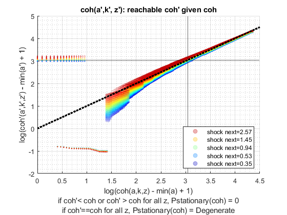 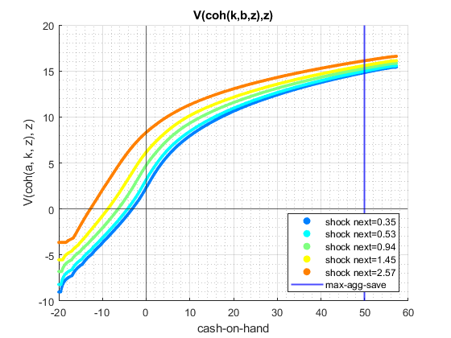
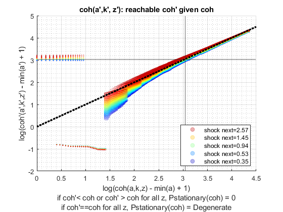 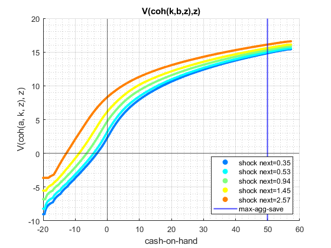 

 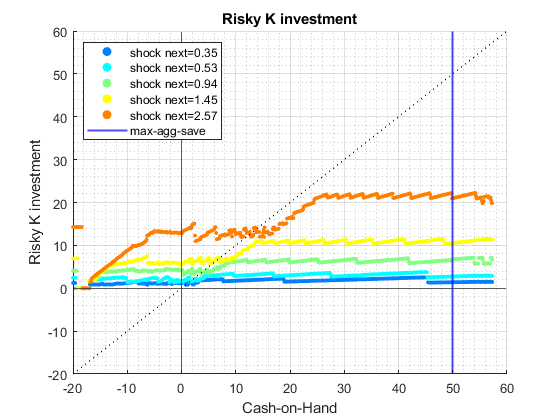 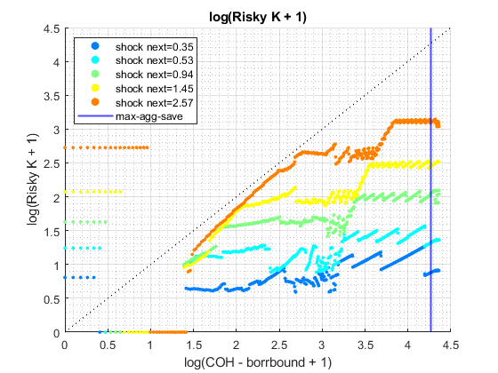
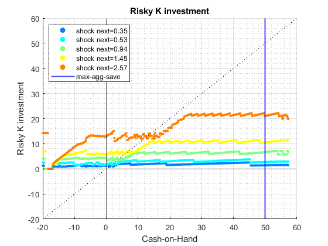 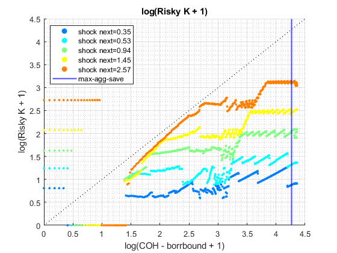 
 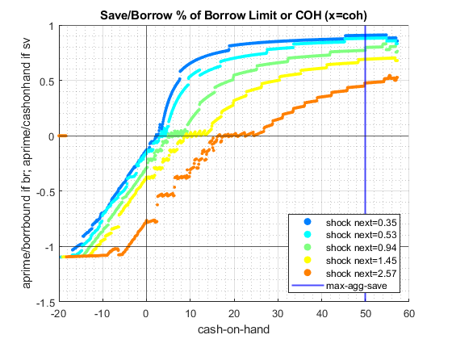
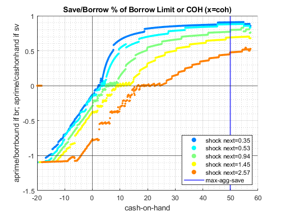 


 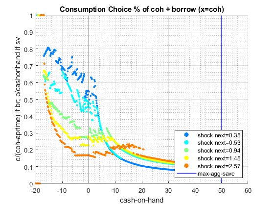
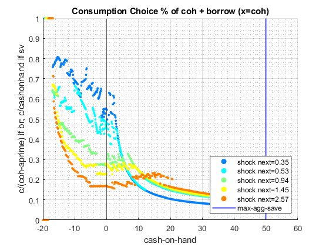 
end
ans =
Map with properties:
Count: 15
KeyType: char
ValueType: any